基礎杭検討プログラム (基礎地盤研究会) ver 1.0.0-beta
操作編
はじめに
アプリケーションの目的
多くの荷重ケースに対する非線形解析や繰り返し計算を、
手軽に正確にできるだけ可視化し、一貫出力までできることを目的とします。
杭基礎の検討で一般的に必要とされる各項目（基礎指針'19 図6.1.1より）について、本プログラムでは、下表のように扱います。
杭基礎の設計フロー
適用範囲
適用
基礎指針'19
杭基礎の基本設定
✗
（設計者が把握します。）
6.1節
荷重の設定
✓
上部構造から基礎に伝達される荷重のうち、慣性力は「荷重条件」で入力します。
杭頭鉛直力は「杭軸力」シートで入力します。
基礎指針のa法、b法に基づいた地盤変位は「地盤」入力ウィンドウで計算されます。
4章
杭種・杭径・杭長・杭材・工法の設定
✗
（設計者が適切に選定します。）
2章、6章
液状化に対する検討
✓
地盤ウィンドウにおいて検討します。
FL値の確認、杭周地盤の反力係数低減率α、βの計算等を行います。
3.2節
地盤の鉛直支持力の算定（杭体の圧縮耐力の算定）
✓
「地盤・杭」セットごとに、検討します。
6.2節、6.6節
負の摩擦力に対する検討
✗
✗
3.1節、6.4節
地盤の引抜抵抗の算定
✓
「地盤・杭」セットごとに、検討します。
6.5節、6.6節
杭頭沈下量の算定（杭の鉛直支持力算定用）
✓
単杭の荷重-沈下関係は、「地盤・杭」セットごとに、検討します。
群杭としての沈下量は、任意矩形荷重面もしくは各杭ごとの等価十字荷重面に対して
成層多層地盤におけるSteinnbrenerの近似解による検討を行います。
6.3節
鉛直荷重に対する杭の設計
✓
「地盤・杭」セットごとに、検討します。
6.1節
地盤の水平方向特性
・水平地盤反力係数
・水平地盤反力度の算定
✓
「地盤・杭」セットごとに、設定します。
6.6節
杭基礎の地震時応力の算定（レベル1荷重）
【単杭の静的非線形解析】
液状化地盤では応答変位法
✓
すべて【群杭フレーム静的非線形解析】で行います。
6.6節
性能グレードの設定
✗
（設計者が適切に設定します。）
6.6節
杭基礎の地震時応力の算定（レベル2荷重）
【群杭フレーム静的非線形解析】
１種地盤以外は応答変位法
✓
すべて【群杭フレーム静的非線形解析】で行います。
6.6節
杭頭接合部の設計
✓
行う予定です。
6.6節
準拠指針・参考文献
| 文献 | 表紙画像 |
|---|---|
|
日本建築学会「建築基礎構造設計指針」 （第3版、2019年） |
|
| 日本建築学会「基礎部材の強度と変形性能」 （第1版、2022年） |
|
| 日本建築学会「建築基礎構造設計例集」 （第3版、2024年） |
|
| 日本建築学会 関東支部「基礎構造の設計 学びやすい構造設計」 （第4版、2023年） |
|
|
キャプテンパイル工法（場所打ち杭用杭頭半固定工法）設計・施工マニュアル」 (第5版、2021年4月改定) |
|
|
F.T.Pile構法既製杭協会「F.T.Pile構法既製コンクリート杭 設計・施工指針【暫定版】」 (BCJ評定-FD0141-05)(2018年12月) |
.png)
|
設計用限界値
解析モデル
基礎指針'19 図6.1.3の分類では、本プログラムの単杭沈下モデルは(a)、水平解析用解析モデルは(b)に相当します。
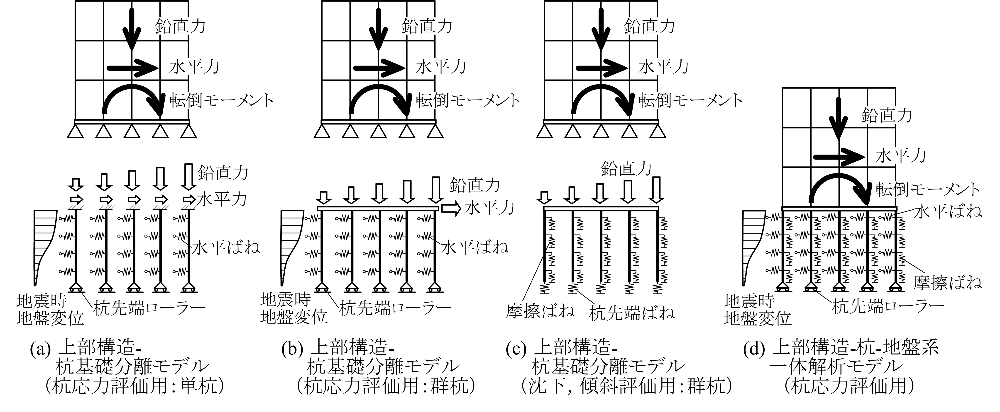
基礎指針'19では、1スパン建物を支持する杭基礎において、押込み側と引抜き側の性状、挙動の違いが指摘されています。
本プログラムでは、軸力に応じた杭の復元力、前方杭、後方杭の指定ができ、このような挙動を考慮した検討をすることができます。
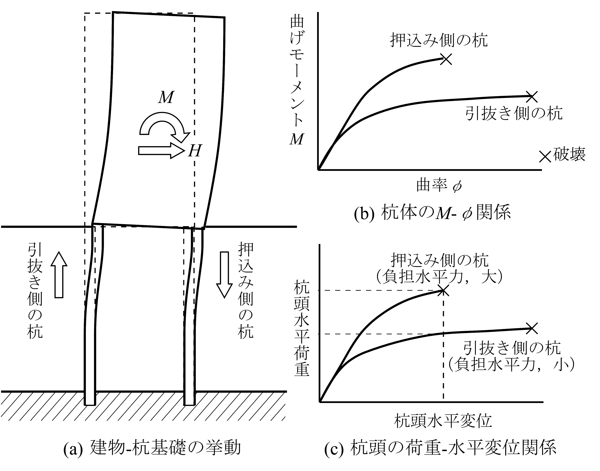
クイックスタートガイド
本プログラムを初めて使用する方向けに、基本的な操作の流れを説明します。
Step 1: 新規プロジェクトの開始
- プログラムを起動すると、メインウィンドウが表示されます。
- 基礎指針の設計例を参考にすると、入力項目の理解が早まる可能性があります。
- この場合、メニュー左端のフォルダマークの「アプリケーションメニュー」で
サンプルファイルを開きます。
Step 2: 荷重条件の設定
- リボンメニュー「解析条件/解析(S)」タブまたは右ペインの「荷重」ボタンで「荷重」ウィンドウを開きます。
- 「荷重ケース」タブを押します。
- レベル1地震荷重共通入力で、慣性力中心X(m)、Y(m)、Z(m)と上部構造慣性力、基礎部慣性力をそれぞれ入力、適用ボタンを押していきます。
- レベル2地震荷重共通入力で、慣性力中心X(m)、Y(m)、Z(m)と上部構造慣性力、基礎部慣性力をそれぞれ入力、適用ボタンを押していきます。
- 保存して閉じるを押します。
Step 3: 地盤条件の設定
- リボンメニュー「解析条件/解析(S)」タブまたは右ペインの「地盤」ボタンで「地盤」ウィンドウを開きます。
- ボーリングデータに基づいて土層情報やN値を入力します。
- 液状化危険度の検討、地盤変位が自動計算されます。
- 「保存して閉じる」を押します。
Step 4: 杭体の設定
- リボンメニュー「解析条件/解析(S)」タブまたは右ペインの「杭体」ボタンで「杭体」入力ウィンドウを開きます。
- 杭の種類（場所打ち杭、既製コンクリート杭）を選択します。
- 複数の杭体区間がある場合は、「区間追加」ボタンで複数の区間を設定します。
- 各杭体区間で、「杭断面編集」ボタンを押し、「杭断面」ウィンドウを開き、断面情報を入力します。
- このとき、MN曲線、QN曲線などが自動計算されます。
- 「保存して閉じる」を押します。
Step 5: 杭配置の入力
- メイン画面左ペインの「杭」→「配置」タブを開きます。
- 「杭配置追加」ボタンで杭を追加し、X, Y座標を入力します。
- 各杭に適用する杭体番号と地盤番号を指定します。
Step 6: 杭軸力の入力
- メイン画面左ペインの「杭」→「軸力」タブで各杭の鉛直荷重を入力します。
- 常時荷重（VL0）と追加荷重（VLadd）を分けて入力できます。
- 地震時荷重（レベル1、レベル2）は各ケースごとに入力します。
- 各杭の軸力を入力します。Excel Worksheet上のデータからCtrl+C、Ctrl+Vで入力することができます。
Step 7: 要素分割
- 地盤と杭体を適切に入力をした後、その組み合わせごとに要素分割を行う必要があります。
- リボンメニュー「解析条件/解析(S)」タブまたは右ペインの「要素分割（未）」ボタンを押し「要素分割」ウィンドウを開きます。
- デフォルトでは土層、杭体区間が切り替わる高さで自動的に区切られた分割状態となっています。
- 自動要素分割ボタンによる1m分割などで要素分割を行います。
- 全ての組合せに対して確認（少なくとも画面表示）を行います。
- 「保存して閉じる」を押します。
Step 8: 水平解析の実行
- リボンメニュー「解析条件/解析(S)」タブまたは右ペインの「水平解析（未）」ボタンを押し「水平解析」ウィンドウを開きます。
- （時間がかかる場合があるので）最低限の荷重ケースのみを選択して水平解析を行います。
- 解析が完了すると、画面上で解析結果を確認できるほか、出力メニューでグラフ、表形式で確認できます。
- 各杭の応力状態（曲げモーメント、せん断力、変位等）を確認できます。
ヒント
- サンプルファイルの活用
- Examplesフォルダには様々な条件のサンプルファイルがあります。
まずサンプルを開いて動作を確認してみてください。 - Excelとの連携
- データグリッドではExcelからのコピー＆ペースト（Ctrl+V）が使えます。
効率よく入出力ができます。 - グラフデータの活用
- 右クリックメニューからデータのコピーが可能です。
- 3Dビューの活用
- 右ドラッグでビュー回転、中ボタンドラッグで平行移動ができます。
ビューキューブをクリックすると定義されたビュー（平面図、立面図等）に素早く切り替えられます。 - 要素分割のコツ
- 詳細な結果を得る必要がなければ、1m程度の自動要素分割をがよいでしょう。
- 水平解析のコツ
- 杭体非線形の水平解析には時間がかかります。
初期段階では、一方向の荷重で検討を進めるとよいでしょう。
杭モデル
１本の杭は、「杭頭」、「杭体」、「杭先端」で構成されます。
「杭頭」については、鉄筋定着工法とした場合、解析上、弾性時の回転固定度を無限大と仮定します。
ただし、軸応力度が (1/4)ξ/Fc 以下の鉄筋コンクリート杭は、回転剛性を緩めます〔「強度と変形性能」3.3,3〕）。
杭頭半固定工法としては、場所打ち鉄筋コンクリート杭では キャプテンパイル工法、既製コンクリート杭では F.T.Pile 構法 を適用できます。
「杭体」の入力は、支持力、沈下および地震時の検討に影響します。
「杭体の種類」は、場所打ち鉄筋コンクリート杭、場所打ち鋼管コンクリート杭、既製コンクリート杭
の3種類です。
「杭体」は、単数または複数の 杭体（断面）区間から構成できます。
場所打ち鋼管コンクリート杭では、鋼管コンクリート部、または 鉄筋コンクリート部
のいずれかを、既製コンクリート杭では、PHC杭、PRC杭、SC杭 のいずれかを選択します。
「杭先端」の入力は、支持力、沈下検討に影響します。
最下段の杭区間よりも大きな先端径を入力した場合、場所打ちコンクリート杭では 拡底杭、既製コンクリート杭では
拡大根固め杭 を仮定します。
「杭配置」においては、「杭頭節点」と「接合節点」が存在します。
「杭頭節点」は、杭頭位置を意味し、この節点を(X,Y,Z)に配置します。
「接合節点」は、基礎梁を「一般梁要素」として連結する場合の節点で、(X,Y,Z+ΔZc)に仮想配置されます。「
「接合節点」は、「要素追加」(Alt+1)モードの時、要素の端点とするときにクリックできます。
基礎梁の入力は、代表節点と杭頭を剛体連結させる解析を行う場合（基礎指針'19では原則として剛とするとある）は、不要です。
操作方法
マウス操作
| マウス操作 | 動作 |
|---|---|
| 右ボタンクリック | 右ボタンクリックメニューを開く |
| 右ボタンプレスドラッグ | ビューの回転 |
| Shift+右ボタンプレスドラッグ | ビューの平行移動 |
| 中ボタンプレスドラッグ | ビューの平行移動 |
| 左ボタンクリック | 杭節点・一般節点・梁要素の選択（クリック位置に最も近いアイテムを選択） |
| Shift＋左ボタンクリック | 選択の追加（既存の選択を維持したまま追加選択） |
| 左ボタンプレスドラッグリリース | （※）選択窓による選択 |
マウスカーソルを節点や梁要素に近づけると、対象がハイライト表示されます。 また、編集モードに応じてカーソル形状が変化します（杭配置追加モード：十字カーソル、一般節点追加モード：十字カーソル、梁要素追加モード：ペンカーソル、選択モード：矢印カーソル）。
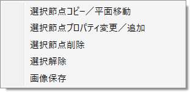
| 右クリックメニュー | 動作 |
|---|---|
| 選択節点コピー／移動 | 選択した節点（杭頭節点・一般節点）をコピー／移動するウィンドウを開きます。dX, dY, dZの移動量を指定できます。 |
| 選択節点プロパティ変更／追加 | 選択した杭節点のプロパティを変更／追加するウィンドウを開きます。 |
| 一般節点⇔杭接合節点 | 選択した杭接合節点を一般節点に変換（Z座標にΔZcを加算）、または選択した一般節点を杭配置に変換（Z座標からΔZcを減算）します。 梁要素の接続は自動的に引き継がれます。 |
| 選択節点削除 | 選択した節点を削除します。 |
| 選択解除 | 選択を解除します。[ESC]と同じ。 |
| 画像保存 | 画像を保存します |
（※）選択窓の動作
- 左から右へのドラッグ
- 窓に 完全におさまる 節点・要素をすべて選択します。
- 右から左へのドラッグ
- 窓に 完全におさまる、または 交差する 節点・要素をすべて選択します。
キーボードショートカット
Ctrl + / キーを押すと、ショートカットキー一覧ウィンドウが表示されます。 ファイル操作、入力ウィンドウの呼び出し、解析実行、ビュー切替、編集モード切替など、 すべてのショートカットキーを確認できます。
主要なショートカットキー：
| ショートカット | 動作 |
|---|---|
| Ctrl+N | 新規作成 |
| Ctrl+O | ファイルを開く |
| Ctrl+S | 上書き保存 |
| Ctrl+Shift+S | 名前を付けて保存 |
| Ctrl+Z | 元に戻す（Undo） |
| Ctrl+Y | やり直す（Redo） |
| Ctrl+A | 全選択 |
| Ctrl+Shift+A | 全ノード選択 |
| ESC | 選択解除 |
| Delete | 選択アイテムの削除 |
| F5 | 水平解析ウィンドウを開く |
| F6 | 鉛直沈下解析ウィンドウを開く |
| Ctrl+Shift+B | 自動梁要素生成 |
| Ctrl+/ | ショートカットキー一覧 |
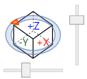
| 操作 | 動作 |
|---|---|
| 面クリック | 選択した面が手前となるようにビュー回転 |
| 辺クリック | 選択した辺が手前となるようにビュー回転 |
| 頂点クリック | 選択した頂点が手前となるようにビュー回転 |
| 水平スクロールバー | 水平ビュー回転 |
| 垂直スクロールバー | 垂直ビュー回転 |
データグリッド(表)操作
データグリッド上の編集可能なセルには、Microsoft Excel Worksheet上の値をコピーした状態で[Ctrl]+[V]を押すことでペーストすることができます。
このとき、選択範囲の左上のセルを起点とし、コピーしたセルの行数、列数の範囲にペーストされます。
ただし、貼り付け範囲の各セルで入力可能な値でなければエラーメッセージが表示されます。
データグリッド上のデータは、セルを選択して[Ctrl]+[C]を押すことでコピーすることができます。
列ヘッダーをクリックすると、その列を基準にデータを昇順・降順でソートできます。 ソートはあくまで表示順序の変更であり、データ自体の並びには影響しません。
右ペインアイテム
右側ペインの各アイコンは、それぞれリボンメニューの同じアイコンと同じはたらきをします。
ステータスバー
画面下端のステータスバーには、以下の情報が表示されます。
- マウス座標: メインビュー上のカーソル位置（X, Y, Z）
- 選択数: 現在選択されているアイテムの数
- 編集モード: 現在の編集モード（選択／杭配置追加／一般節点追加／梁要素追加）
- ズーム率: 現在のビューのズーム倍率
左ペインアイテム
「杭」
左側ペインの「杭」タブをクリックして開くタブパネルで、内容を入力します。 「杭」タブの直下には、「配置」、「軸力」、「前後方杭」タブがあります。
「配置」
「杭配置追加」ボタンをクリックすると、最も大きな杭配置番号の杭位置からX正方向7.2mの位置に新たな杭を配置します。
「杭配置追加」ボタン下のデータグリッドには、すべての杭配置のリストが表示されます。
| 項目 | 説明 | 編集可否 |
|---|---|---|
| X(m) | 杭中心のX座標 | ✓ |
| Y(m) | 杭中心のY座標 | ✓ |
| 杭頭Z(m) | 杭頭のZ座標 | ✓ |
| 接続-杭頭ΔZc(m) | 接続節点～杭頭節点の距離 | ✓ |
| 杭体番号 | 適用する杭体の杭体番号 | ✓ |
| 地盤番号 | 適用する地盤の地盤番号 | ✓ |
| 群杭係数 | 群杭効果の補正係数（デフォルト1.0） | ✓ |
| 杭間隔比 | R/Bを入力します | ✓ |
「軸力」
データグリッドで、配置済みの杭配置に、軸力を入力します。
| 項目 | 説明 | 編集可否 |
|---|---|---|
| X(m) | 杭中心のX座標 | ✗ |
| Y(m) | 杭中心のY座標 | ✗ |
| VL0(kN) | 常時軸力（基礎自重等） | ✓ |
| VLadd(kN) | 追加軸力（上部構造等の加算） | ✓ |
| VL(kN) | 合計軸力（VL0 + VLadd） | ✗ |
| 1-1(kN)～1-4(kN) | 各レベル1地震ケース時の軸力（常時荷重を含む合計軸力） | ✓ |
| 2-1(kN)～2-4(kN) | 各レベル2地震ケース時の軸力（常時荷重を含む合計軸力） | ✓ |
| R_SLS(kN) | 押込み側使用限界支持力 | ✗ |
| Rt_SLS(kN) | 引抜き側使用限界軸力 | ✗ |
| R_DLS(kN) | 押込み側損傷限界支持力 | ✗ |
| Rt_DLS(kN) | 引抜き側損傷限界軸力 | ✗ |
| R_ULS(kN) | 押込み側安全限界支持力 | ✗ |
| Rt_ULS(kN) | 引抜き側安全限界軸力 | ✗ |
前後方杭
データグリッドで、配置済みの杭配置の方向別の前方杭/後方杭を指定します。
「方向1」は荷重ケース「1-1」、「2-1]に
、「方向2」は荷重ケース「1-2」、「2-2」に、以下同様に対応します。
「自動選別」ボタンをクリックすると、方向別にそれぞれの杭について指定した角度の範囲にほかの杭の有無を調べ、
自動的に前方杭、後方杭を選別します。
| 項目 | 説明 | 編集可否 |
|---|---|---|
| X(m) | 杭中心のX座標 | ✗ |
| Y(m) | 杭中心のY座標 | ✗ |
| 方向1 | 荷重ケース1-1、2-1の場合 | ✓ |
| 方向2 | 荷重ケース1-2、2-2の場合 | ✓ |
| 方向3 | 荷重ケース1-3、2-3の場合 | ✓ |
| 方向4 | 荷重ケース1-4、2-4の場合 | ✓ |
「根入部」
地下室の土圧合力ばねを作成するための情報を入力します。
土圧合力ばねに適用する地盤番号を選定します。
根入部は、多くの場合もっとも低い杭頭レベルである根入部下端レベルを基準として手動で入力します。
根入部の形状は、X軸、Y軸に平行な直方体として入力します。
区分数コンボボックスから0～5を指定することで、最大5段階の平面形状の変化を表現できます。
なお、土圧合力ばねは、荷重方向の前面と背面の土圧で定義され、側面摩擦抵抗などは考慮されません。
本プログラムでは、根入部の土圧合力ばねの相対変位に関するパラメータは、入力した
「Δp/根入れ深さ（係数）」から自動設定されます。
Δp = （Δp/根入れ深さ）×（根入れ深さ） , ysp = 0.1 × Δp
| 項目 | 説明 | 編集可否 |
|---|---|---|
| 厚さ(m) | 根入れ区間の厚さ | ✓ |
| 上端Z(m) | 根入れ区間上端のZ座標 | ✗ |
| 下端Z(m) | 根入れ区間下端のZ座標 | ✗ |
| X1(m) | 根入れ区間X方向最小値の座標 | ✓ |
| X2(m) | 根入れ区間X方向最大値の座標 | ✓ |
| Y1(m) | 根入れ区間Y方向最小値の座標 | ✓ |
| Y2(m) | 根入れ区間Y方向最大値の座標 | ✓ |
| dx(m) | 根入れ区間X方向寸法。|X2-X1| | ✗ |
| dY(m) | 根入れ区間Y方向寸法。|Y2-Y1| | ✗ |
「一般節点」
左側ペインの「一般節点」タブをクリックして開くタブパネルで、一般節点を管理します。
一般節点は、杭頭節点以外の位置に梁要素の端点を配置するために使用します。
「一般節点追加」ボタンをクリックすると、新しい一般節点が追加されます。
| 項目 | 説明 | 編集可否 |
|---|---|---|
| X(m) | 節点のX座標 | ✓ |
| Y(m) | 節点のY座標 | ✓ |
| Z(m) | 節点のZ座標 | ✓ |
| タイプ | 節点タイプ（General等） | ✗ |
| 選択 | 選択状態チェックボックス | ✓ |
| 削除 | 当該節点を削除するボタン | - |
一般節点は、メインビュー上でも選択可能です。
右クリックメニューの「一般節点⇔杭接合節点」により、選択した一般節点を杭配置に変換（Z座標からΔZcを減算）、
または選択した杭配置を一般節点に変換（Z座標にΔZcを加算）できます。
「一般梁要素」
左側ペインの「一般梁要素」タブをクリックして開くタブパネルで、梁要素を管理します。
「一般梁要素」タブの直下には、「材料」、「断面」、「梁要素」タブがあります。
「材料」
梁要素に適用する材料を定義します。
「材料ウィザード」ボタンをクリックすると、コンクリート強度から材料特性を自動計算できます。
| 項目 | 説明 | 編集可否 |
|---|---|---|
| No | 材料番号 | ✗ |
| 名称 | 材料名 | ✓ |
| ヤング係数(N/mm²) | 材料のヤング係数 | ✓ |
| せん断弾性係数(N/mm²) | 材料のせん断弾性係数 | ✓ |
| ポアソン比 | 材料のポアソン比 | ✓ |
「断面」
梁要素に適用する断面を定義します。
「断面ウィザード」ボタンをクリックすると、断面寸法から断面性能を自動計算できます。
「全断面ねじれ剛性無視」ボタンをクリックすると、すべての断面のIxx係数を0.0に設定し、ねじれ剛性を無視します。
| 項目 | 説明 | 編集可否 |
|---|---|---|
| No | 断面番号 | ✗ |
| 名称 | 断面名 | ✓ |
| 幅(m) | 断面の幅 | ✓ |
| 高さ(m) | 断面の高さ | ✓ |
| 係数A, Ay, Az, Ixx, Iyy, Izz | 各断面性能の増減係数（デフォルト1.0） | ✓ |
| A(m²), Ay(m²), Az(m²) | 断面積、せん断面積Y、せん断面積Z | ✗ |
| Ixx(m⁴), Iyy(m⁴), Izz(m⁴) | ねじり剛性、断面二次モーメントYY、断面二次モーメントZZ | ✗ |
「梁要素」
梁要素を定義します。梁要素は2つの節点（節点I、節点J）を接続する線材要素です。
節点には、杭頭節点、一般節点のいずれかを指定できます。
| 項目 | 説明 | 編集可否 |
|---|---|---|
| No | 要素番号 | ✗ |
| 節点I | 始端節点（杭頭節点または一般節点） | ✗ |
| 節点J | 終端節点（杭頭節点または一般節点） | ✗ |
| 材料No | 適用する材料の番号 | ✓ |
| 断面No | 適用する断面の番号 | ✓ |
| β(°) | 要素座標系の回転角度 | ✓ |
| 選択 | 選択状態チェックボックス | ✓ |
「梁要素」タブパネルには以下の操作ボタンがあります。
- 要素の節点分割：選択した要素を、重なる節点位置で分割します。「分割距離(m)」で判定距離を設定できます。
- 交差点で要素分割：選択した要素同士の交差点に一般節点を自動生成し、それぞれの要素を交差点で分割します。
- 重複要素の削除：同一の2節点を持つ重複した梁要素を削除します。
- 等分割：選択した要素を指定した分割数で等間隔に分割します。
また、メインビューのツールバーで以下の操作が可能です。
- 選択／要素追加モード：「選択」モードと「要素追加」モードを切り替えます。「要素追加」モードでは、メインビュー上の2つの節点をクリックして梁要素を追加できます。
- 自動梁要素生成（Ctrl+Shift+B）：選択中の杭配置について、X座標またはY座標が同一の杭配置同士を梁要素（材料No.1、断面No.1）で自動連結します。
- デフォルトΔZc：梁要素の節点高さのオフセット値を設定します。
「通り心」
Ｘ軸、Ｙ軸に平行な通り心を定義します。
通り心断面は、沈下解析結果で沈下形状を確認することができます。
タブパネル上部の「選択対象距離」テキストボックスで、通り心選択ボタン使用時に対象とするオブジェクトまでの距離(m)を設定できます。
| 項目 | 説明 | 編集可否 |
|---|---|---|
| 通り名 | 通り名 | ✓ |
| dX(m) | 間隔 | ✗ |
| X(m) | 座標 | ✗ |
| 選択 | 当該通り心付近（選択対象距離以内）の杭配置・一般節点を選択します | - |
| 削除 | 当該通り心を削除します | - |
「群杭荷重」
基礎指針'19、5.3節 沈下、1.沈下量の検討、(3)即時沈下量の算定、(ⅲ)多層地盤の場合 に従い、
スタインブレナー近似式による沈下計算のための条件を入力します。
荷重
矩形荷重を定義します。
荷重タイプコンボボックスで、「任意矩形」または「個別十字」を定義します。
任意矩形
「任意矩形」タイプでは、任意の矩形荷重を定義できます。
基礎指針'19、6.3節 沈下、2 群杭の沈下、a)群杭の即時沈下、(ⅰ)等価荷重面法に従い、
建物範囲に矩形分布荷重を適用する場合は、「任意矩形」として、入力します。
| 項目 | 説明 | 編集可否 |
|---|---|---|
| X1(m) | X座標 | ✓ |
| Y1(m) | Y座標 | ✓ |
| X2(m) | 座標 | ✓ |
| Y2(m) | 座標 | ✓ |
| 荷重(kN) | 矩形荷重 | ✓ |
| DX(m) | 矩形荷重X方向寸法 | ✗ |
| DY(m) | 矩形荷重Y方向寸法 | ✗ |
| 面積(m2) | 矩形荷重面面積 | ✗ |
| 単位面積荷重(kN/m2) | 矩形荷重単位面積荷重 | ✗ |
個別十字
「個別十字」タイプでは、杭形状ごとに、任意の直径の円形の荷重面を想定し、
面積が等価な5つの矩形荷重面として自動入力します。
| 項目 | 説明 | 編集可否 |
|---|---|---|
| 地盤・杭・レベルセット番号 | X座標 | ✗ |
| 地盤番号 | Y座標 | ✗ |
| 杭体番号 | 座標 | ✗ |
| 杭頭Z(m) | 座標 | ✗ |
| 杭先端Z(m) | 矩形荷重 | ✗ |
| 荷重面等価径 | 円形荷重面の等価直径 | ✓ |
グリッド
沈下量を計算する点を定義します。
杭配置のうち最小、最大のX座標およびY座標で囲まれる長方形範囲を、それぞれX方向、Y方向に外側に指定した距離オフセットした範囲を対象とし、
およそ指定した間隔でグリッドを作成します。
間隔は、通り心がある場合は、自動的に通り心を含むように調整されます。
土層
沈下検討用の成層地盤を定義します。群杭検討では、深い範囲の土層データが必要です。
基礎指針'19、5.3節 沈下、2.沈下計算の対象となる地盤の範囲では、「深部に軟弱な地層がなければ、
沈下計算の対象深度は、採荷面から下方に概ね$\sqrt{A}$の2倍の範囲とすればよい」とあります。
| 項目 | 説明 | 編集可否 |
|---|---|---|
| 下端Z(m) | 土層下端レベル | ✓ |
| 厚さ(m) | 土層厚さ | ✗ |
| 変形係数(kN/m2) | 土層の変形係数 | ✓ |
| ポアソン比 | 土層のポアソン比 | ✓ |
沈下量
計算結果を表形式で表示します。
メニュー下ボタンアイテム
「基本設定」入力
メニューバー直下の「基本設定」ボタンをクリックして開くウィンドウで、以下の内容を入力します。
- プロジェクト番号
- プロジェクト名
- Z軸符号
- 性能グレード
「荷重条件」入力
メニューバー直下の「荷重条件」ボタンをクリックして開く「荷重条件ウィンドウ」で、内容を入力します。
「荷重条件ウィンドウ」には「上部構造・基礎部、地盤の作用の重ね合わせ」タブと「荷重ケース」タブがあります。
「上部構造・基礎部、地盤の作用の重ね合わせ」タブパネルでは、上部構造と基礎部への作用の重ね合わせに用いる係数を入力します。
係数が1の場合のみ重ね合わせケース数は1で、それ以外の場合は重ね合わせケース数は4になります（基礎指針'19 6.6節、2 杭基礎の応力評価法、d 杭応力の重ね合わせ）。
「荷重ケース」タブでは、レベル1、レベル2地震荷重それぞれ4方向のについて、名称、慣性力方向、地盤非線形性、杭体非線形性、慣性力作用中心、上部構造慣性力、基礎部慣性力を定義します。
共通入力データグリッドで入力して適用ボタンをクリックすると、そのレベルのすべてのケースに入力が適用されます。
- レベル1荷重の定義
- レベル2荷重の定義
荷重・解析条件
- デフォルトの解析ケースに対する荷重組み合わせ（荷重係数）
| 解析ケース | 解析荷重ケース | |||||||||||
|---|---|---|---|---|---|---|---|---|---|---|---|---|
| VL0 | VLadd | E1-1 | E1-2 | E1-3 | E1-4 | E2-1 | E2-2 | E2-3 | E2-4 | |||
| VL | 1.0 | 1.0 | ||||||||||
| 1-1 | 1.0 | |||||||||||
| 1-2 | 1.0 | |||||||||||
| 1-3 | 1.0 | |||||||||||
| 1-4 | 1.0 | |||||||||||
| 2-1 | 1.0 | |||||||||||
| 2-2 | 1.0 | |||||||||||
| 2-3 | 1.0 | |||||||||||
| 2-4 | 1.0 | |||||||||||
「地盤」入力
メニューバー直下の「地盤」ボタンをクリックして開く「地盤入力ウィンドウ」で、地盤条件を入力します。
本ウィンドウは、左側に入力用パネル（上部：基本パラメータ、中段：土層データ表・土質点データ表）、右側にグラフ表示パネルを配置した構成です。
基本操作
- 地盤番号：ウィンドウ上部のコンボボックスで対象の地盤番号を選択します。初期値は 1 です。「(New)」を選択すると新しい地盤データを作成できます。
- 地盤符号：地盤の参照名を任意に設定できます（例：「GR1」など）。
- 計算例：「計算例」ボタンのメニューから、あらかじめ用意された計算例データを読み込むことができます。
- 保存して閉じる（Ctrl+Enter）：入力内容を保存してウィンドウを閉じます。
- 破棄して閉じる（Esc）：入力内容を破棄してウィンドウを閉じます。
- 元に戻す / やり直し：Ctrl+Z / Ctrl+Y で操作を取り消し・再実行できます。
「孔口レベル・地下水位」タブ
地盤の基準となる標高と深度を設定します。上段が標高（Z）入力、下段がGL深さ表示です。標高と深度は連動しています。
| 項目 | 説明 |
|---|---|
| 孔口標高Z | 地盤天端の標高を入力します。基準レベル（RefLevel）からの相対値として表示されます。 |
| 地下水位Z | 地下水位の標高を入力します。孔口標高より大きい値を入力するとエラー表示（赤背景）となります。 |
| 地中応力計算用Z | 全応力・有効応力の計算基準となる標高です。通常は孔口標高と同じ値にします。 |
| 孔口深度 | 常に GL +0.000（表示のみ）。 |
| 地下水位深度 | 地下水位のGL深さです。標高と連動して自動計算されます。直接入力も可能です。 |
| 地中応力計算用深度 | 応力計算基準のGL深さです。標高と連動して自動計算されます。 |
「液状化」タブ
液状化判定に用いる設計用地表面加速度を設定します。
| 項目 | 説明 |
|---|---|
| レベル1荷重検討用地表面加速度 (m/s²) | レベル1地震動に対する設計用地表面加速度を入力します。 |
| レベル2荷重検討用地表面加速度 (m/s²) | レベル2地震動に対する設計用地表面加速度を入力します。 |
「地盤変位」タブ
地盤の地震時水平変位の算定に関するパラメータを設定します。
| 項目 | 説明 |
|---|---|
| 表層の土質 | 「粘性土」または「砂質土」から選択します。動的変形特性の定数 $C_\alpha$ の決定に使用されます。 |
| 地盤変位算定法 |
「a1(b1)」または「a2(b2)」から選択します。 基礎指針'19 表4.5.1に基づく液状化しない地盤における水平変位の算定法です。 算定法により地震動の設定位置・形態、解析手法が異なります。 |
| 工学的基盤の単位体積重量 (kN/m³) | 工学的基盤層の単位体積重量を入力します（初期値：19）。 |
| 工学的基盤のせん断波速度 (m/s) | 工学的基盤層のせん断弾性波速度を入力します（初期値：400）。 |
土層データ表
地盤の土層構成を定義します。「土層追加」ボタンで行を追加し、各行の右端の「×」ボタンで削除できます。
土層データは上位層から順に入力します。
| 列名 | 入力/自動 | 説明 |
|---|---|---|
| No. | 自動 | 土層番号（自動採番） |
| 層厚 (m) | 入力 | 各土層の厚さ |
| 下端深度 (m) | 入力 | 各土層の下端GL深さ |
| 下端Z (m) | 自動 | 各土層の下端標高（孔口標高から自動計算） |
| 土層名 | 入力 | 土層の名称（任意の文字列） |
| 土層分類 | 入力 | 「粘性土」「砂質土」「礫質土」から選択 |
| 単位体積重量 (kN/m³) | 入力 | 土層の単位体積重量 |
| 年代 | 入力 | 「沖積層」「洪積層」から選択。液状化判定に使用 |
| N値 | 入力 | 標準貫入試験N値 |
| 粘着力 (kN/m²) | 入力 | 土層の粘着力。杭の周面抵抗の算定に使用 |
| S波速度 (m/s) | 入力 | せん断弾性波速度。地盤変位計算に使用 |
| 変形係数 (kN/m²) | 入力 | 地盤の変形係数。水平地盤反力係数の算定に使用 |
| 押込み周面抵抗 | 入力 | チェックを入れると、この土層を押込み時の周面摩擦抵抗の算定に使用します |
| 引抜き周面抵抗 | 入力 | チェックを入れると、この土層を引抜き時の周面摩擦抵抗の算定に使用します |
| 工学的基盤 | 自動 | 工学的基盤層であるかを示すチェックマーク（「地盤変位」タブの設定に連動） |
土質点データ表
液状化判定・地盤変位計算に用いる土質点（質量点）を定義します。
「土質点追加」ボタンで行を追加できます。
GL深さで指定した地点ごとに、N値・S波速度・細粒分含有率などを入力します。
土層データとの対応により、土層分類・単位体積重量・年代・工学的基盤フラグが自動設定されます。
入力項目
| 列名 | 説明 |
|---|---|
| 層厚 H (m) | 土質点の層厚。未入力の場合は「間隔」が既定値として使用されます。工学的基盤層では空欄となります。 |
| 間隔 (m) | 隣接する土質点との間隔 |
| GL深さ (m) | 地表面からの深さ（負値） |
| N値 | 標準貫入試験N値 |
| 初期S波速度 (m/s) | 初期せん断弾性波速度 $V_{S0}$。地盤変位計算に使用 |
| 細粒分含有率 Fc (%) | 細粒分含有率。液状化判定に使用 |
自動計算項目
| 列名 | 説明 |
|---|---|
| No. | 土質点番号（自動採番） |
| 層下面Z (m) | 層厚Hの累積から算出される層下面標高 |
| 土層番号 | 対応する土層データの番号（土層データから自動設定） |
| 土層名 | 対応する土層の名称（土層データから自動設定） |
| 土層分類 | 粘性土/砂質土/礫質土（土層データから自動設定） |
| 単位体積重量 (kN/m³) | 対応する土層の値（土層データから自動設定） |
| 年代 | 沖積層/洪積層（土層データから自動設定） |
| 標高深さ (m) | 孔口標高とGL深さから算出される標高 |
| 質量 (t/m²) | 各土質点の負担質量（隣接土質点との中間点から算出） |
| 工学的基盤 | 工学的基盤層であるかのフラグ（土層データから自動設定） |
液状化判定結果（自動計算）
| 列名 | 記号 | 説明 |
|---|---|---|
| 全応力 | $\sigma_z$ | 深さ方向の全応力 |
| 有効応力 | $\sigma_z'$ | 深さ方向の有効応力 |
| 液状化対象層 | — | 液状化判定の対象となる層かどうか |
| 低減係数 | $r_d$ | 深さ方向の低減係数 |
| 換算N値 | $N_1$ | 有効上載圧で補正したN値 |
| N値増分 | $\Delta N_f$ | 細粒分含有率によるN値の補正増分 |
| 補正N値 | $N_a$ | 液状化判定用の補正N値 $(N_1 + \Delta N_f)$ |
| 液状化抵抗比 | $\tau_L / \sigma_z'$ | 液状化に対する抵抗比 |
レベル1・レベル2地震動の計算結果（自動計算）
以下の項目がレベル1地震動（緑色ヘッダー）とレベル2地震動（青色ヘッダー）のそれぞれについて表示されます。
| 列名 | 記号 | 説明 |
|---|---|---|
| 繰り返しせん断応力比 | $\tau_d / \sigma_z'$ | 地震時の繰り返しせん断応力比 |
| 液状化安全率 | $F_L$ | 液状化に対する安全率 |
| 地盤反力係数低減率 | $\beta_L$ | 液状化による地盤反力係数の低減率 |
| 繰り返しせん断ひずみ | $\gamma_{cy}$ | 液状化に伴う繰り返しせん断ひずみ |
| 液状化水平変位 | $\sum \gamma_{cy} H$ | 液状化による水平変位の累積値 |
| 等価S波速度 | $V_{SE}$ | ひずみレベルを考慮した等価せん断弾性波速度 |
| 等価せん断ばね剛性 | $k$ | 各層の等価せん断ばね剛性 |
| 仮の無次元化水平変位 | $u$ | 仮の変位分布 |
| 調整後無次元化水平変位 | $u^*$ | 工学的基盤面を基準に正規化した変位分布 |
| 地盤の水平変位 | $D_{max} \cdot u^*$ | 地表面最大変位に無次元化変位を乗じた値 (mm) |
| 地盤の水平変位＋液状化変位 | $D_{max} \cdot u^* + \sum \gamma_{cy} H$ | 地盤変位と液状化変位を合算した値 (mm) |
グラフ表示（右側パネル）
右側パネルのタブで各種グラフを確認できます。グラフ上でマウスカーソルを動かすと、座標値が表示されます。
| タブ名 | 内容 |
|---|---|
| N値 | 深度方向のN値分布図 |
| 粘着力 | 深度方向の粘着力分布図 |
| S波速度 | 深度方向のせん断弾性波速度分布図 |
| 変形係数 | 深度方向の変形係数分布図 |
| 地盤変位 |
深度方向の地盤変位分布図。「内容」コンボボックスで以下の表示を切り替えられます。 $D_{max} u^*$（レベル1）、$D_{max} u^*$（レベル2）、$D_{max} u^*$（レベル1,2）、 $D_{max} u^* + \sum \gamma_{cy} H$（レベル1）、同（レベル2）、同（レベル1,2） |
| 液状化安全率 |
深度方向の $F_L$ 分布図。「内容」コンボボックスで以下の表示を切り替えられます。 $F_L$（レベル1）、$F_L$（レベル2）、$F_L$（レベル1,2） |
「杭体」入力
メニューバー直下の「杭体」ボタンをクリックして開く「杭体入力ウィンドウ」で、杭体の諸元を入力します。
本ウィンドウでは、杭頭・杭体区間（断面）・杭先端の各部位を定義します。
基本操作
- 杭体番号：ウィンドウ上部のコンボボックスで対象の杭体番号を選択します。「(New)」を選択すると新しい杭体を作成できます。
- 杭体符号：杭体の参照名を任意に設定できます。
- 削除：現在表示中の杭体データを削除します。
- 保存して閉じる（Ctrl+Enter）：入力内容を保存してウィンドウを閉じます。
- 破棄して閉じる（Esc）：入力内容を破棄してウィンドウを閉じます。
- 元に戻す / やり直し：Ctrl+Z / Ctrl+Y で操作を取り消し・再実行できます。
杭体タイプ
以下の杭体タイプから選択します。選択した杭体タイプにより、入力可能な項目や杭断面の構成が異なります。
| 杭体タイプ | 説明 |
|---|---|
| 場所打ち鉄筋コンクリート杭 | 現場で鉄筋かごを挿入しコンクリートを打設する杭 |
| 場所打ち鋼管コンクリート杭 | 鋼管をケーシングとして使用する場所打ち杭。鋼管コンクリート部と鉄筋コンクリート部の2種類の区間を持ちます |
| 既製コンクリート杭 | 工場で製作されたコンクリート杭（PHC杭・PRC杭・SC杭） |
| 鋼管杭 | 鋼管を使用した杭（現在は未対応） |
杭頭
杭頭接合タイプをコンボボックスから選択します。選択可能なタイプは杭体タイプにより異なります。
「杭頭編集」ボタンをクリックすると、杭頭の詳細設定ウィンドウが開きます。
杭頭編集ウィンドウ
杭頭編集ウィンドウでは以下の項目を設定できます。
パイルキャップ
| 項目 | 説明 |
|---|---|
| Fc (N/mm²) | パイルキャップの設計基準強度 |
| γ (kN/m³) | パイルキャップコンクリートの単位体積重量 |
| Ec (N/mm²) | パイルキャップのヤング係数（自動計算） |
定着筋
杭頭接合タイプに応じて、以下の工法別の入力が表示されます。
- キャプテンパイル工法：PCリング、絞り率ν、引張定着筋の有無と配置（正方形/円形配置、配筋径・規格・配置辺長/直径）
- FT-Pile構法：FTキャップの選択、引張定着筋の有無と配置（本数・規格）
- 鉄筋（定着筋）：主筋の本数・呼び径、規格（SD295/SD345/SD390/SD490）、重心かぶり厚
表示タブ
- 諸元：杭頭断面の算定された諸元（断面積・断面二次モーメント等）を表形式で確認できます
- 上面図：杭頭断面の配筋状況を平面図で確認できます。右クリックで画像コピー・保存が可能です
- MNインタラクション：曲げモーメント-軸力の相互作用図
- θMインタラクション：回転角-曲げモーメントの相互作用図
杭体区間
杭体の中間区間を定義します。「区間追加」ボタンで区間を追加できます。
各区間について以下の項目を設定します。
| 列名 | 説明 |
|---|---|
| 区間長 (m) | 区間の長さ |
| 下端深さ (m) | 区間下端の深さ（自動計算） |
| 杭断面編集 | ボタンをクリックすると杭断面編集ウィンドウが開きます |
| 杭断面タイプ | 設定されている断面タイプの表示（自動） |
| 杭断面概要 | 断面の概要情報の表示（自動） |
杭断面編集ウィンドウ
各区間の断面詳細を設定します。入力項目は杭体タイプにより異なります。
場所打ち鉄筋コンクリート杭
| 項目 | 説明 |
|---|---|
| 杭径 (mm) | コンクリート外径 |
| 設計基準強度 Fc (N/mm²) | コンクリートの設計基準強度 |
| 単位体積重量 γ (kN/m³) | コンクリートの単位体積重量 |
| 施工品質管理係数 ξ | 施工品質管理に関する係数 |
| 縦弾性係数 (N/mm²) | コンクリートのヤング係数（自動計算） |
| 主筋 | 本数・呼び径（D10〜D41）・規格（SD295/SD345/SD390/SD490）・重心かぶり厚 |
| せん断補強筋 | 補強筋径・間隔・規格・重心かぶり厚 |
場所打ち鋼管コンクリート杭
「部位」コンボボックスで「鋼管コンクリート部」と「鉄筋コンクリート部」を切り替えて入力します。
鋼管コンクリート部では、鋼管の外径・管厚・規格・腐食深さに加え、コンクリートおよび主筋の情報を入力します。
鉄筋コンクリート部では、場所打ちRC杭と同様の入力を行います。
既製コンクリート杭
断面タイプを以下から選択します。
- PHC杭：プレストレストコンクリート杭。規格リストから選択します
- PRC杭：プレテンション式遠心力高強度コンクリート杭。規格リストから選択します
- SC杭：外殻鋼管付きコンクリート杭。規格リストから選択し、腐食深さを入力します
インタラクション図（表示タブ）
杭断面編集ウィンドウでは以下のインタラクション図を確認できます。
- N-Qインタラクション：軸力-せん断力の相互作用図
- M-φインタラクション：曲げモーメント-曲率の相互作用図
- M-θインタラクション：曲げモーメント-回転角の相互作用図
- N-Mインタラクション：軸力-曲げモーメントの相互作用図
杭先端
杭先端の施工条件を設定します。
| 項目 | 説明 |
|---|---|
| 杭工法 |
以下から選択します。 「場所打ちコンクリート杭」「埋込み杭（プレボーリング）」「埋込み杭（中掘り）」「打込み杭」「回転貫入杭」 |
| 杭先端径 d (mm) | 杭先端の直径（300〜100,000 mm） |
場所打ちコンクリート杭の場合の追加項目
| 項目 | 説明 |
|---|---|
| 拡底杭先端立ち上がり (mm) | 拡底部の立ち上がり高さ |
| 拡底杭先端角度 (°) | 拡底部の広がり角度（0〜60°） |
既製コンクリート杭の場合の追加項目
| 項目 | 説明 |
|---|---|
| 根固め高さ径比 | 根固め部の高さと杭径の比（1〜5） |
| 杭先端形状 | 「開端杭」「閉端杭」から選択（杭工法が「打込み杭」の場合のみ表示） |
| 支持層への根入れ深さ $L_B$ (m) | 開端杭の場合に入力。杭先端閉塞効率の算定に使用 |
| 杭の内径 $d_I$ (m) | 開端杭の場合に入力。杭先端閉塞効率の算定に使用 |
| 杭先端閉塞効率 | $L_B$ と $d_I$ から自動計算される値（表示のみ） |
「軸力確認」
メニューバー直下の「軸力確認」ボタンをクリックして開くウィンドウで、内容を入力します。
各杭配置について、それぞれの杭体が入力された軸力に対して
「基礎部材の強度と変形性能」で定義された軸力の適用範囲に納まっているかを確認します。
「要素分割」
要素分割ウィンドウが開きます。要素分割ウィンドウを開くには、以下の条件を満たす必要があります。
すべての杭配置について、「杭頭Z(m)」と適用する「杭体番号」によって定義される杭下端が、適用する「地盤番号」の土層の最下層下端、土質点の最下点よりも高いことが必要です。
すべての杭配置について、「杭頭Z(m)」と適用する「杭体番号」によって定義される杭上端が、適用する「地盤番号」の土層の最上層上端、土質点の最上点よりも低いことが必要です。
「土層-杭セット」タブ
「土層-杭セットNo.」コンボボックスで、対象の「土層-杭セットNo.」を選択します。
初期状態：杭区間境界レベル、土層境界レベルに変更不可の分割節点が設定されます。
「自動要素分割実行」：設定した「杭頭～第二節点最大距離」、「最大節点間距離」に従った自動分割を実行します。
「杭頭～第二節点最大距離」：初期値0.10mです。十分に小さい値にします。
「最大節点間距離」：初期値1.00mです。
「土層-根入部セット」タブ
根入れ部が存在する場合、「土層-根入部セット」タブが現れます。
初期状態：根入れ区間境界レベル、土層境界レベルに変更不可の分割節点が設定されます。
「自動要素分割実行」：設定した「最大節点間距離」に従った自動分割を実行します。
「最大節点間距離」：初期値5.00mです。
「要素分割」済みとならなければ、「水平解析ウィンドウ」を開くことはできません。
「要素分割」済みとならなければ、「単杭沈下解析ウィンドウ」を開くことはできません。
「水平解析」
「要素分割」済みの場合、「水平解析ウィンドウ」を開くことができます。ボタン押下時は砂時計カーソルが表示されます。
「単杭沈下解析」
「要素分割」済みの場合、「単杭沈下解析ウィンドウ」を開くことができます。 解析完了後、リボンボタンに「済●」マークが表示されます。
「群杭沈下解析」
左ペインの「群杭荷重」タブパネルが開きます。
「基礎梁考慮鉛直解析」
「単杭沈下解析」済みかつ「基礎梁要素」が定義されている場合、「基礎梁考慮鉛直解析ウィンドウ」を開くことができます。
基礎梁と杭の非線形鉛直ばねを連成させたNewton-Raphson法による増分解析を行います。 以下の最大9ケースの解析が可能です。
- VL（常時+追加）: ゼロ状態からの増分解析（ベースケース）
- レベル1地震時（1-1～1-4）: VL収束状態からの差分増分解析
- レベル2地震時（2-1～2-4）: VL収束状態からの差分増分解析
解析完了後、リボンボタンに「済◎」マーク（青色二重丸）が表示されます。
計算理論編
地盤の液状化
基礎指針'19では、地盤の液状化に対する設計上の留意事項として、図6.1.6が示されています。
本プログラムでは、(a)の地盤の水平抵抗力の低下は基礎指針'19、3.2節の$\alpha_L$、$\beta_L$を自動的に考慮します。
(b)の浮力の増大、根入れ部の側圧の増大は、それに応じた杭軸力を指定すれば考慮することができます。
ただし、現状は液状化の有無により杭軸力を変化させることはできないため、液状化なしに対しても同じ値を使います。
(c)の側方流動のような現象は考慮できません。懸念される場合は、別途地盤改良などの対策が必要です。
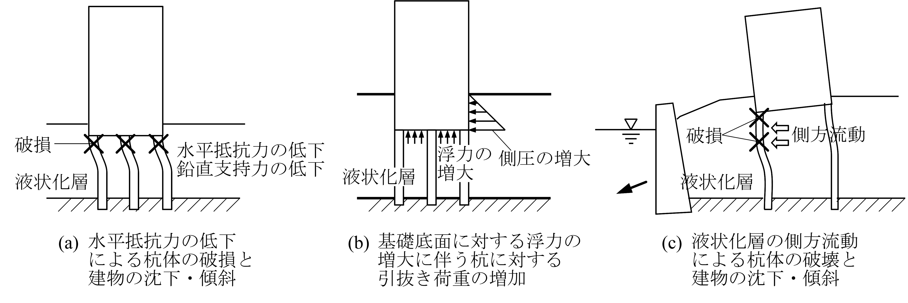
- ここに、
- $\tau_d$水平面に生じる等価な一定繰返しせん断応力振幅
- $\sigma_z'$検討深さにおける有効土被り圧（鉛直有効応力）
- $r_n$等価な繰返し回数に関する補正係数
- $M$地震のマグニチュードで通常は7.5
- $a_{max}$地表面における設計用水平加速度
- $g$重力加速度
- $\sigma_z$検討深さにおける全土被り圧（鉛直全応力）
- $r_d$地盤が剛体でないことによる低減係数
- $z$地表面からの検討深さ
- ここに、
- $N_1$換算N値
- $C_N'$拘束圧に関する換算係数
- $\Delta N_f$細粒分含有率$F_L$に応じた補正N値増分で、図3.2.2による
- $N$自動落下法による実測N値
- ここに、
- $\tau_L$水平面における液状化抵抗
- ここに、
- $\gamma_{cy}$i層の繰返しせん断ひずみ
- $H_i$i層の層厚
方法基礎指針'19 3.2節 地盤の液状化による
繰り返しせん断ひずみは、図3.2.6から読み取る必要があります。
図中の繰り返しせん断ひずみ
$0.5\%$、$1\%$、$2\%$、$4\%$、$8\%$のうち、およそもっとも近い曲線のひずみを採用しています。
土中の有効応力は、調査時地表以下の任意の高さに対して算定可能としています。
地盤反力係数の低減率 β は、図3.2.13から読み取る必要がありますが、ポリリニアの曲線を定義し、 z 土中の有効応力は、調査時地表以下の任意の高さに対して算定可能としています。
水平抵抗および基礎部材の設計
杭の水平地盤反力係数
-
節点位置
- 杭断面が切り替わる位置には節点を設ける。
- 土層が切り替わる位置には節点を設ける。
- 杭頭にごく近い位置に節点を設ける。
地盤の変位
- ここに、
- $C_1$表層の$G-\gamma_1$関係から決まる定数(粘性土で0.0028,砂質土で0.0015)
- $C_2$表層の土質の減衰特性から決まる定数(粘性土で0.53,砂質土で0.66)
- $\alpha$地盤の地震時の固有周期の延び
- $f_A$地震荷重の加速度一定領域の影響を考慮する補正係数
- $R_{Z0}$地盤の表層と工学的基盤の初期インピーダンス比
- ここに、
- $L$地震荷重レベルにより決まる定数(レベル1で0.2,レベル2で1.0)
- $Z$地域係数
- $C_\alpha$表層の土質の動的変形特性から決まる定数(粘性土で25,砂質土で40)
- $T_0$地盤の初期固有周期
- ここに、
- $\alpha$地盤の地震時の固有周期の延び
- $T_0$地盤の初期固有周期
- $k_i$地表から第i番目の等価せん断ばね剛性
根入部の水平土圧合力ばね
-
節点位置
- 根入部断面が切り替わる位置には節点を設ける。
- 土層が切り替わる位置には節点を設ける。
土圧合力ばね
- ここに、
- $y$地下外壁と地盤の相対変位（地盤変位-地下外壁変位）
- $\Delta_p$受働土圧に至る相対変位
- $y_{sp}$基準相対変位
- $P_0$静止土圧合力
- $P_p$受働土圧合力
- $B$基礎幅
本プログラムでは、水平抵抗に対する検討では、基礎指針'19 図6.6.9(a)に示された模式図に従います。ただし、3次元のモデルとします。
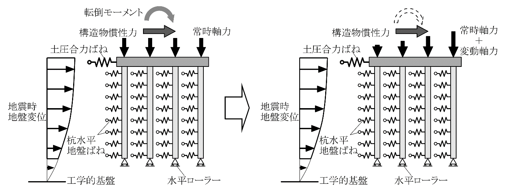
- ここに、
- $k_h$杭水平変位$y$時の水平地盤反力係数
- ここに、
- $k_{h0}$基準水平地盤反力係数
- $y_{0}$基準水平変位
- ここに、
- $\alpha$80
- $\xi$水平地盤反力に群杭の影響を考慮する係数
- $B$杭径
- $\overline{B}$無次元化杭径(=$B/B_0$)
- $B_0$杭径の基準値(=0.01)
- $E_0$基準水平地盤反力係数を評価するために用いる地盤の変形係数
- ここに、
- $p_y$塑性水平地盤反力度
- ここに、
- $B$杭径
- $R$杭の中心間隔
- $N_p$杭本数
- ここに、
- $K_P$受働土圧係数$= \frac{1 + \sin\phi}{1 - \sin\phi}$
- $\phi$内部摩擦角
- $\sigma_z'$深さ$z$における地盤の有効上載圧
- $\kappa$砂質土の塑性水平地盤反力度に群杭の影響を考慮する係数
単杭および前方杭の場合
後方杭の場合
単杭および前方杭の場合
$$\mu = 1.4$$
$$\lambda = 9.0$$
後方杭で \( R/B \geq 3 \) の場合
$$\mu = 1.4$$
$$\lambda = 9.0$$
後方杭で \( R/B < 3 \) の場合
$$\mu = 0.6(R/B) - 0.4$$
$$\lambda = 3.0(R/B)$$
- ここに、
- $c_u$非排水せん断強度
- $\lambda$粘性土地盤の塑性水平地盤反力度に群杭の影響を考慮する係数
- $\mu$粘性土地盤の塑性水平地盤反力度に群杭の影響を考慮する係数
\( \frac{z}{B} \leq 2.5 \) の場合
$$p_y = 2\left[1 + \mu \frac{z}{B} \right] c_u$$
\( \frac{z}{B} > 2.5 \) の場合
$$p_y = \lambda c_u$$
場所打ち鉄筋コンクリート杭の強度と変形性能
場所打ち鉄筋コンクリート杭のコンクリートのヤング係数
$$E_c = 3.35 \times 10^4 \times (\frac{\gamma}{24})^2 \times (\frac{\zeta F_c}{60})^{\frac{1}{3}}$$
場所打ち鉄筋コンクリート杭の使用限界曲げモーメント
$$M_s = \beta_1 \cdot \min(M_{s1},M_{s2},M_{s3})$$
- 記号
- $\beta_1$設計式の信頼性に基づく低減係数で1.0とする。
- $M_{s1}$断面の圧縮縁がコンクリートの使用限界圧縮強度($(1/3) xi \cdot F_c$)に達したときの曲げモーメント
- $M_{s2}$圧縮鉄筋が長期許容圧縮応力度に達したときの曲げモーメント
- $M_{s3}$引張鉄筋が長期許容引張応力度に達したときの曲げモーメント
場所打ち鉄筋コンクリート杭の使用限界せん断力
$$Q_s = \beta_1 \cdot \frac{2}{3} \cdot \frac{0.065 k_c \cdot (49.0+\xi \cdot F_c)}{M/(Q \cdot d)+1.7} (1+\frac{\sigma_0}{14.7}) \cdot b \cdot j$$
- 記号
- $\beta_1$設計式の信頼性に基づく低減係数で0.9とする。
- $k_c$断面寸法による補正係数でRC基準2018による
- $\sigma_0$軸応力度で軸力を杭の断面積で除した値。
- $M/(Q\cdot d)$せん断スパン比で1.0以下のときは1.0、3.0以上のときは3.0とする。
- $M$杭に発生する最大曲げモーメント
- $Q$杭に発生する最大せん断力
- $d$せいが$D$の等価長方形断面に置換した場合の有効せいで、$d=0.9D$とする。
- $D$杭の直径
- $b$せいが$D$の等価長方形断面に置換した場合の幅で、$b=\pi D/4$とする。
- $j$せいが$D$の等価長方形断面に置換した場合の応力中心間距離で、$j=(7/8)d$とする。
場所打ち鉄筋コンクリート杭の損傷限界曲げモーメント
$$M_d = \beta \cdot \min(M_{d1},M_{d2},M_{d3})$$
場所打ち鉄筋コンクリート杭の損傷限界せん断力
$$Q_s = \beta \cdot \frac{0.065 k_c \cdot (49.0+\xi \cdot F_c)}{M/(Q \cdot d)+1.7} (1+\frac{\sigma_0}{14.7}) \cdot b \cdot j$$
場所打ち鉄筋コンクリート杭の安全限界曲げモーメント
$$M_u = \beta_1 \cdot \beta_2 \cdot M_{u0}$$
場所打ち鉄筋コンクリート杭の安全限界せん断力
$$Q_u = \beta_1 \cdot \beta_2 \cdot \{ \frac{0.053 p_{t}^{0.23} (18+\xi \cdot F_c)}{M/(Q \cdot d)+0.12} + 0.85 \sqrt{p_w \cdot \sigma_{wy}} + 0.1 \sigma_0 \} \cdot b \cdot j$$
場所打ち鉄筋コンクリート杭の解析モデル
場所打ち鉄筋コンクリート杭の軸力と軸ひずみの関係
$$N = E \cdot A_e \cdot \epsilon $$
- 記号
- $N$場所打ち鉄筋コンクリート杭の軸力
- $E_c$コンクリートのヤング係数で3.1式による。
- $A_e$コンクリート換算断面積$=A_c + (n-1) \cdot A_g$
- $A_c$杭の断面積
- $n$ヤング係数比$=E_s / E_c$
- $E_s$鉄筋のヤング係数で$2.05 \times 10^5$とする。
- $A_g$主筋全断面積
- $\epsilon$杭の軸ひずみ
- $F_c$コンクリートの設計基準強度
- $\xi$施工の品質管理にかかわる係数。通常の施工品質管理を行う場合には0.75以下、高品質な施工管理を行う場合には1.0以下とする。
場所打ち鉄筋コンクリート杭の曲げモーメントと曲率の関係
断面の平面保持を仮定し、断面解析によりM-φ関係を計算します。
鉄筋の応力度-ひずみ度関係は規格降伏点を用いたバイリニアとします。
コンクリートの応力度-ひずみ度関係はe関数法によります。
$$M_{cr} = Z_e (f_t + \sigma_{0e}) $$
$$\phi_{cr} = \frac{M_{cr}}{E_c \cdot I_e} $$
- 記号
- $Z_e$換算断面係数$Z_e = I_e / r$
- $I_e$杭主筋を考慮した換算断面２次モーメント$I_e = I+\frac{1}{2} \cdot (n-1) \cdot A_g \cdot r_s^2$
- $I$杭の断面２次モーメント$I = \pi \cdot r^4 / 4$
- $r$杭の半径
- $r_s$杭中心から杭主筋までの距離
- $f_t$コンクリート曲げ引張強度$f_t=0.56 \sqrt{\xi \cdot F_c}$
- $\sigma_{0e}$軸力を換算断面積で除した軸応力度$\sigma_{0e}= \frac{N}{A_e}$
- $N$軸力（圧縮力を正、引張力を負とする）
$$\phi_c = \phi_{cr} +(\phi_y - \phi_{cr}) \frac {\beta_1 \cdot M_{u0} - M_{cr}}{M_y - M_{cr}} $$
- 記号
- $\phi_{cr}$曲げひび割れ発生時の曲率で(3.11)式による
- $\phi_y$主筋降伏発生時の曲率
- $M_{cr}$曲げひび割れモーメントで(3.11)式による
- $M_y$主筋降伏発生時の曲げモーメント
- $\beta_1$(3.6)式の記号説明による
- $M_{u0}$安全限界曲げモーメントで(3.6)式の記号説明による
場所打ち鉄筋コンクリーﾄ杭の変形性能
杭応力度$\sigma_{0}$が$(1/4)\xi \cdot F_c$以下の場合には、杭頭接合面にM-θ回転ばねを用います。
$$\theta_y = \frac {1}{2} \alpha \cdot d_b \cdot \phi_y $$
- 記号
- $\alpha$杭主筋比、パイルキャップの形状、軸力などによる係数で32。
- $d_b$異形鉄筋の呼び径
- $\phi_y$杭頭の主筋降伏時の曲率
場所打ち鋼管コンクリート杭の強度と変形性能
場所打ち鋼管コンクリート杭の使用限界曲げモーメント
$$M_s = \beta_1 \cdot \min(M_{s1},M_{s2},M_{s3},M_{s4},M_{s5})$$
場所打ち鋼管コンクリート杭の使用限界せん断力
$$Q_s = \beta_1 \frac {A_s}{\kappa} _sf_{ss}$$
場所打ち鋼管コンクリート杭の損傷限界曲げモーメント
$$M_d = \beta \cdot \min(M_{d1},M_{d2},M_{d3},M_{d4},M_{d5})$$
場所打ち鋼管コンクリート杭の損傷限界せん断力
$$Q_d = \beta \frac {A_s}{\kappa} _sf_{sd}$$
場所打ち鋼管コンクリート杭の安全限界曲げモーメント
$$M_u = \beta_1 \cdot \beta_2 \cdot M_{u0}$$
場所打ち鋼管コンクリート杭の安全限界せん断力
$$Q_u = \beta_1 \cdot \beta_2 \cdot \frac{2}{3} \pi \cdot t_s (D-t_s) \frac{f_{cy}}{\sqrt{3}} \sqrt{1-p^2}$$
場所打ち鋼管コンクリート杭の解析モデル
場所打ち鋼管コンクリート杭の軸力-軸ひずみ関係
$$N = (E_c \cdot A_c+ E_s \cdot A_s + E_r \cdot A_r) \epsilon$$
$\epsilon \ge 0$$$N = (E_s \cdot A_s + E_r \cdot A_r) \epsilon$$
$\epsilon ＜ 0$- 記号
- $N$杭の軸力
- $\epsilon$杭の軸ひずみ
- $E_s$鋼管のヤング率
- $E_r$鉄筋のヤング率
- $E_c$コンクリートのヤング率
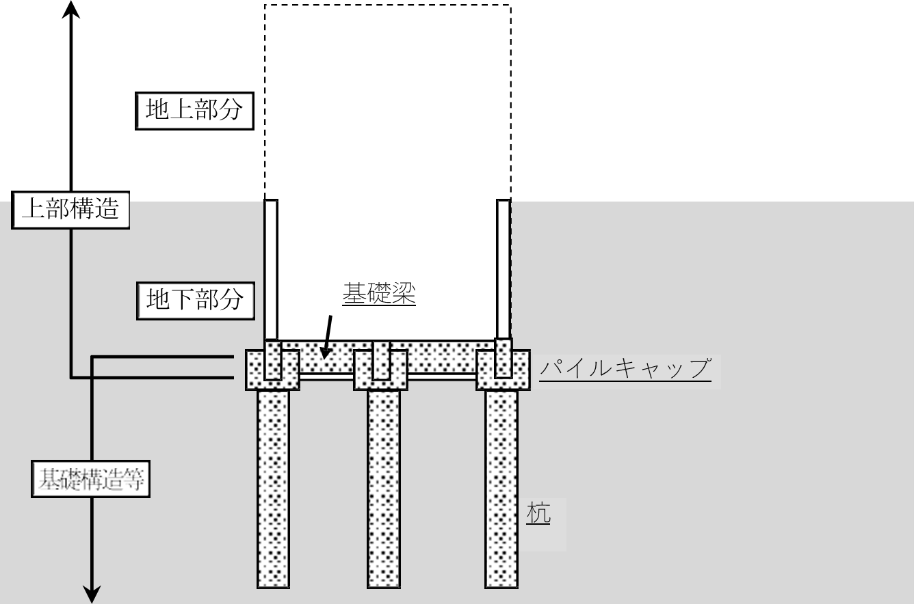

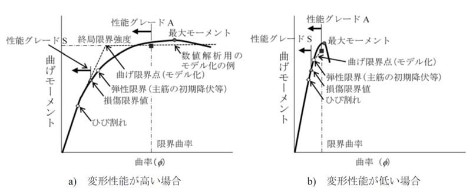
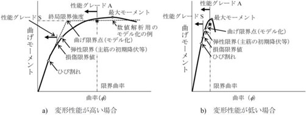
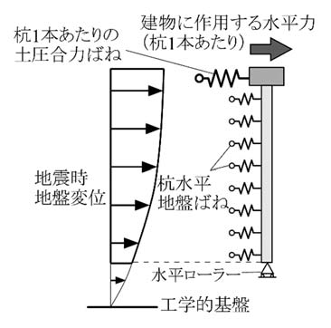
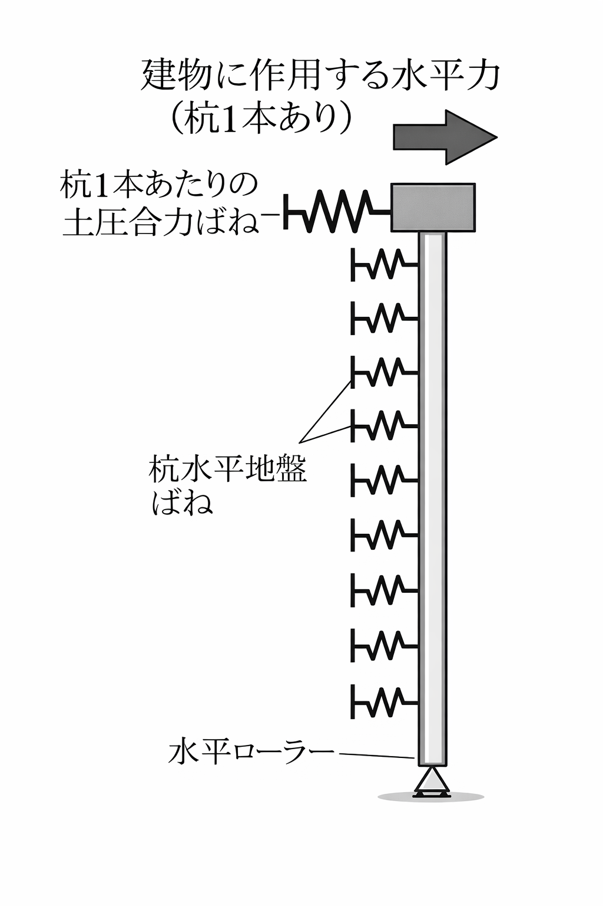
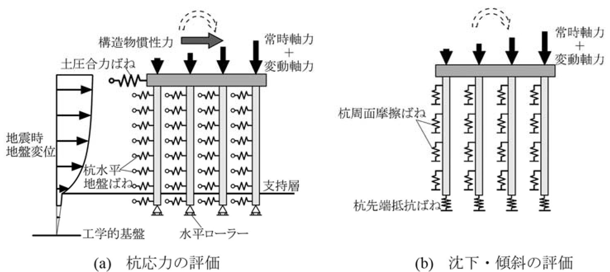
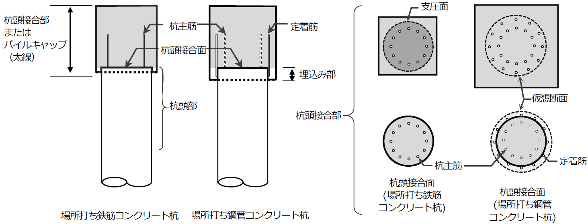
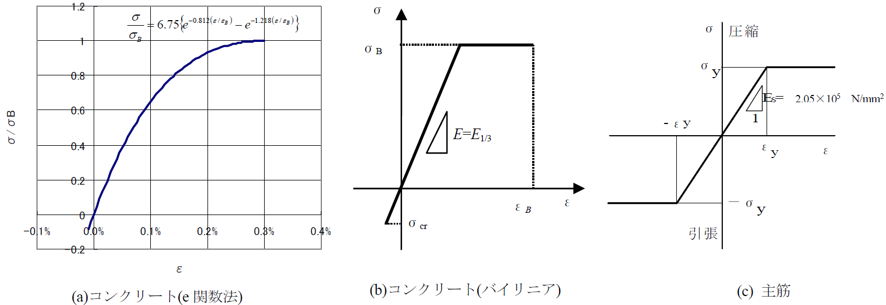
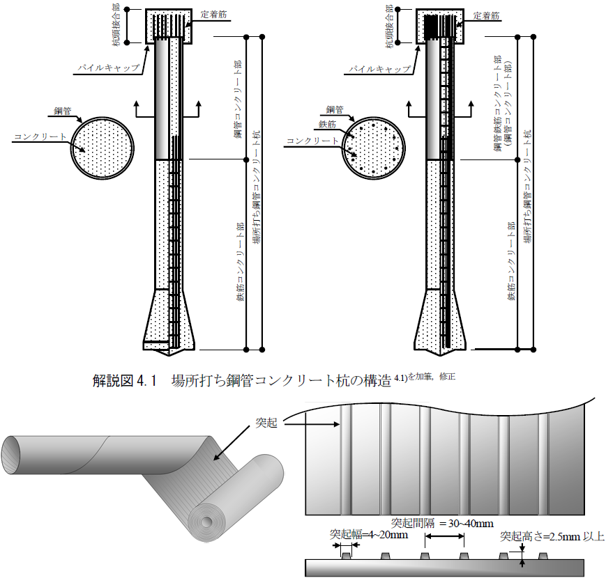
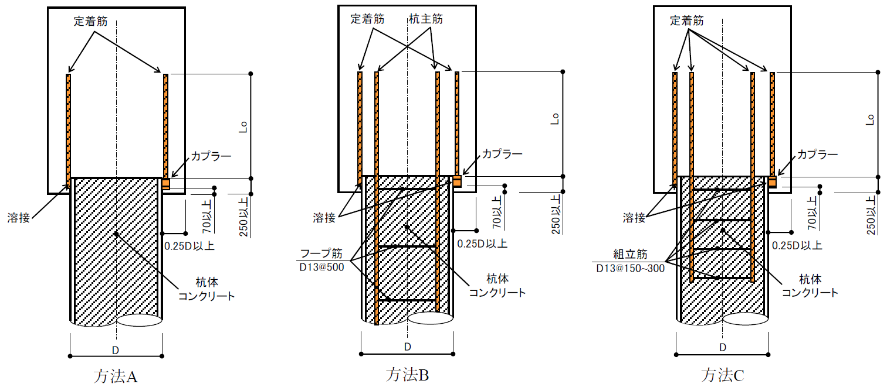
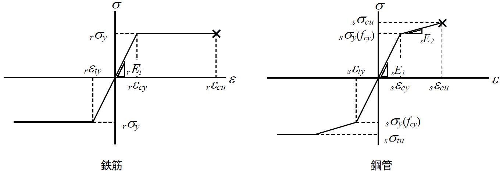
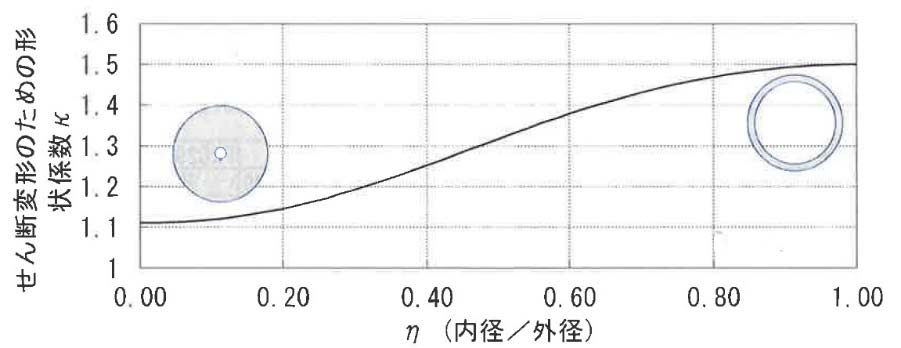
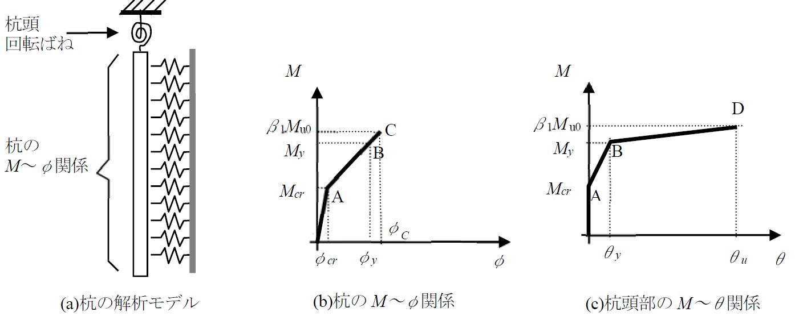
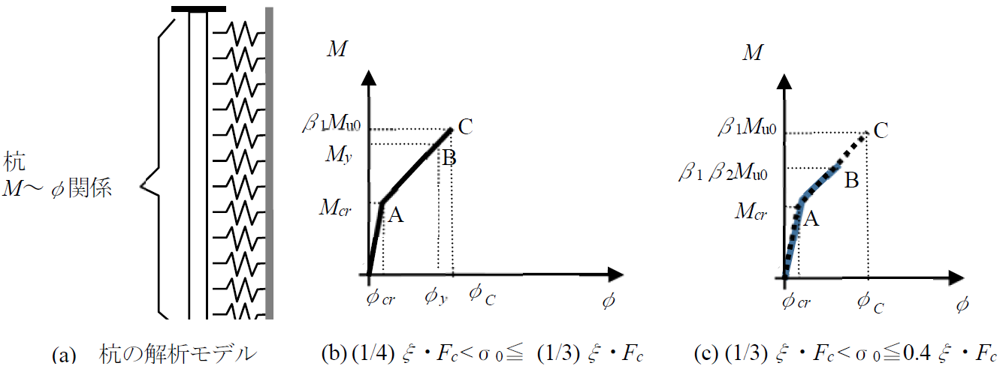
鉛直支持力
本プログラムでは、ブロック破壊により沈下性状が決まる杭には対応していません。
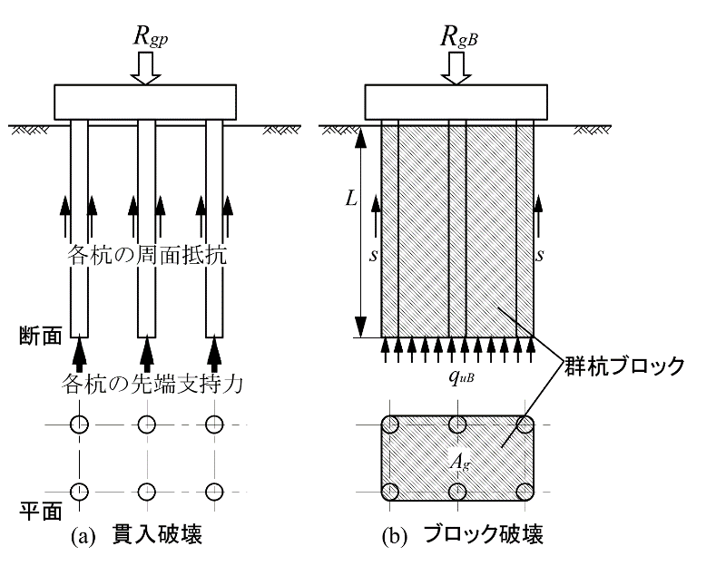
単杭の即時沈下量は、本プログラムでは、荷重伝達解析（既往の載荷試験で得られた杭の先端抵抗-先端変位量関係と周面抵抗-変位量関係に基づいて単杭の荷重-沈下量関係を解析的に求める方法）によって求めます。
なお、杭自重は考慮します。本来杭打設時の自重は場所打ち杭、プレボーリング杭ではすべて先端で支持されるべきですが、本プログラムでは、杭頭荷重がない時でも周面抵抗が有効としています。
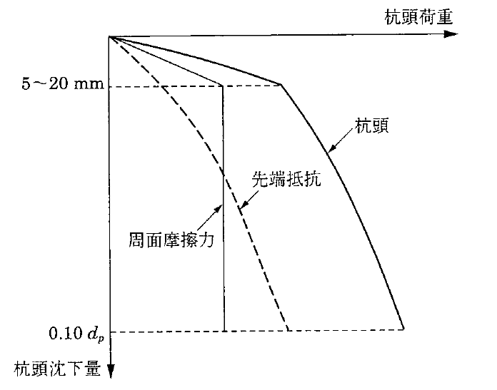
杭周面抵抗は基礎指針'19 表6.3.2の土層の種類と計算された極限周面抵抗力によるトリリニアモデルでモデル化します。
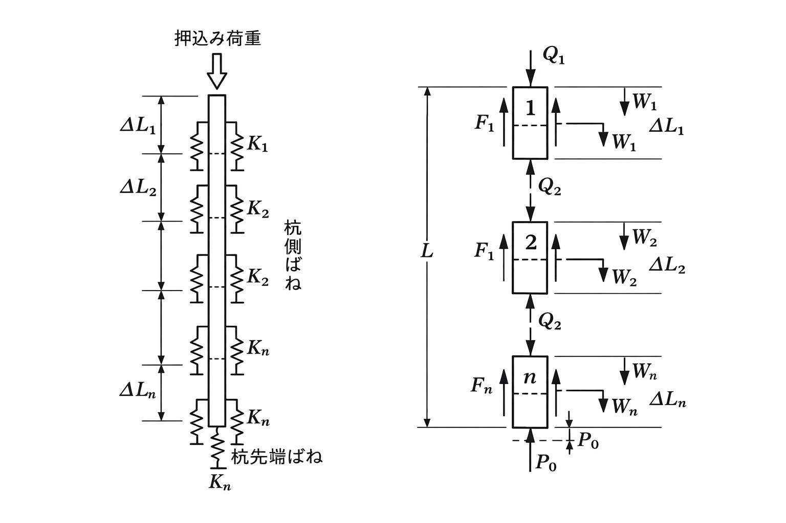
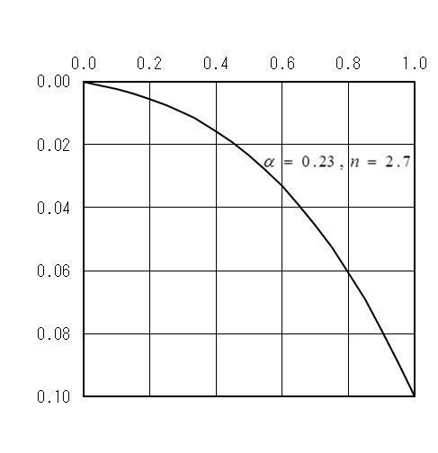
鉛直支持力
極限鉛直支持力
$$R_u = R_p + R_f$$
極限先端支持力
$$R_p = q_p A$$
極限周面抵抗力
$$R_f = R_{fs} + R_{fc}$$
砂質土部分の極限周面抵抗力
$$R_{fs} = \tau_s L_s \psi$$
粘性土部分の極限周面抵抗力
$$R_{fc} = \tau_c L_c \psi$$
使用限界状態
$$R_d = \phi_R R_u = \frac{1}{3} R_u$$
損傷限界状態
$$R_d = \phi_R R_u = \frac{1}{1.5} R_u$$
終局限界状態
$$R_d = \phi_R R_u = \frac{1}{1} R_u$$
引抜抵抗力
最大引抜き抵抗力
$$R_{TU} = \left( \sum \tau_{sti} L_{si} + \tau_{cti} L_{ci} \right) \psi + W$$
残留引抜き抵抗力
$$R_{TR} = \frac{1}{1.2} \left( \sum \tau_{sti} L_{si} + \tau_{cti} L_{ci} \right) \psi + W$$
降伏引抜き抵抗力
$$R_{TY} = \frac{2}{3} \left( \sum \tau_{sti} L_{si} + \tau_{cti} L_{ci} \right) \psi + W$$
砂質土部分の杭引抜き時の最大周面抵抗力度
$$\tau_{sti} = \frac{2}{3} \tau_{si}$$
粘性土部分の杭引抜き時の最大周面抵抗力度
$$\tau_{cti} = \frac{4}{5} \tau_{ci}$$
使用限界状態
$$R_d = \phi_R R_{TU} = \frac{1}{3} R_{TU}$$
損傷限界状態
$$R_d = \phi_R R_{TY} = \frac{1}{1} R_{TY}$$
終局限界状態
$$R_d = \phi_R R_{TR} = \frac{1}{1} R_{TR}$$
単杭の鉛直地盤ばね
-
節点位置
- 杭断面が切り替わる位置には節点を設ける。
- 土層が切り替わる位置には節点を設ける。
単杭の沈下
- ここに、
- $S_p$杭先端沈下量
- $d_p$杭先端直径
- $R_p$杭先端荷重
- $A_p$杭先端断面積
- $(R_p/A_p)_u$極限先端支持力度
- $\alpha$曲線の初期接線勾配
- $n$曲線形状を決定する次数
引抜き荷重に対する荷重-沈下量関係は、押込み側と同様に荷重伝達法によります。
ただし、杭先端の抵抗力は0とし、引抜き側杭周面抵抗力は基礎指針'19 p247に従い砂質土は押込み側の2/3倍、粘性土は押込み側の4/5倍とします。
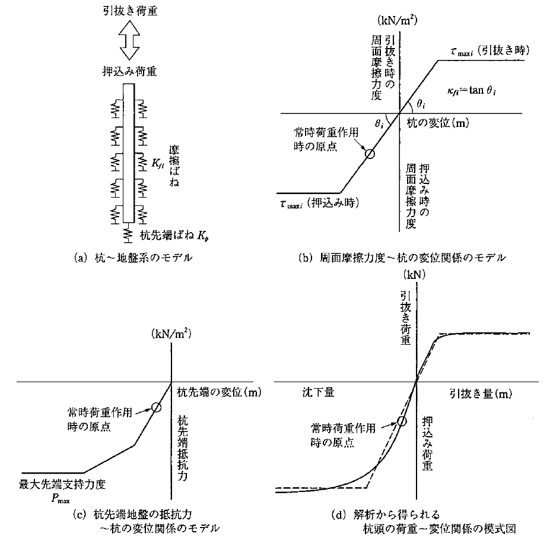
ブロック破壊で決まる引抜き抵抗は本プログラムでは考慮できません。
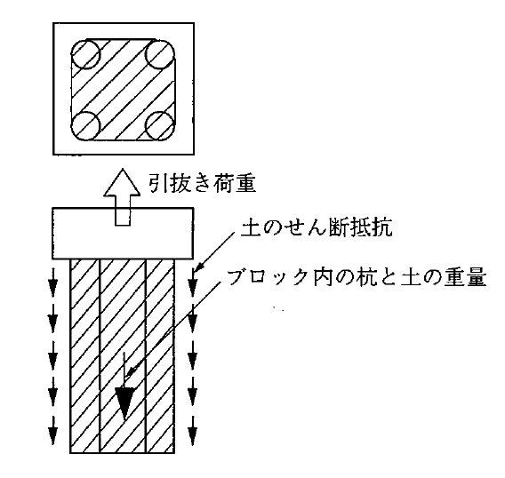
水平抵抗に対する基礎部材の設計は、基礎部材の強度と変形性能によります。
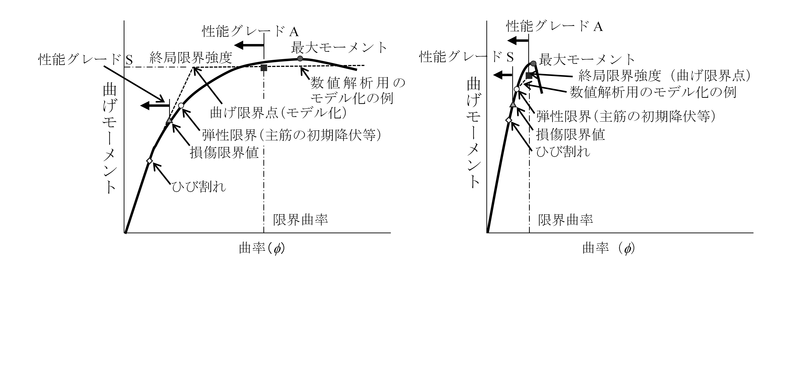
群杭の即時沈下モデル
-
概要
- 本プログラムでの検討法は、基礎指針'19の簡易算定法として分類される等価荷重面法である。
-
検討をするには、下記3項目を入力する。
- 荷重面Z
- 荷重面の平面形状および荷重
- 群杭即時沈下検討用土層
- 基礎指針2019では、杭周面抵抗に対する等価荷重面の例として杭下端から杭長の1/3上方のレベルに荷重面を設ける場合、杭先端荷重に対する等価荷重面の例として杭先端レベルに荷重面を設ける場合が例示されている。
- なお、基礎指針2019では、地震時の群杭効果は「1本の柱を複数の杭で支持することによる群杭効果を除き、地震時に増減する鉛直荷重に対しては、群杭効果を考慮せずに単杭として扱ってよい」（p231）とある。
群杭の沈下
建物の杭は、杭間の相互作用（群杭効果）を無視できない場合が多く、即時沈下量の検討においてその効果を考慮する必要があります。
本プログラムでは、基礎指針'19 図6.3.11のような等価荷重面法を考慮できます。
ただし、等価荷重面はその形状、数は任意のものとすることができますが、任意の一つのレベルに設定する必要があります。
また、地盤モデルは一つの成層多層地盤とする必要があります。
なお、地震時の沈下量に対する群杭効果は基礎指針'19(p231)に考慮する必要がないことが示されており、本プログラムでも考慮しません。
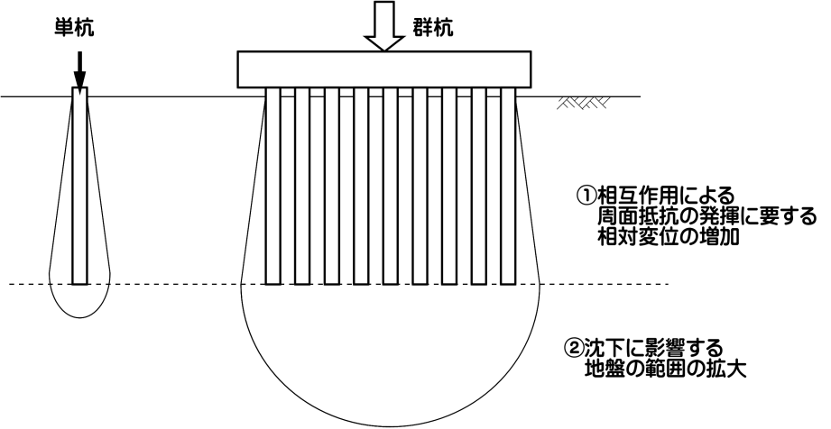
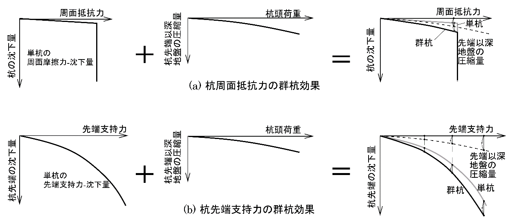
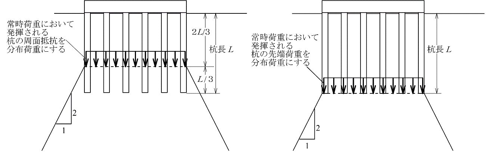
地震時の荷重沈下関係は、基礎指針'19(p232)によると、即時沈下における荷重-沈下関係を用いることができます。
本プログラムでもこれに従います。
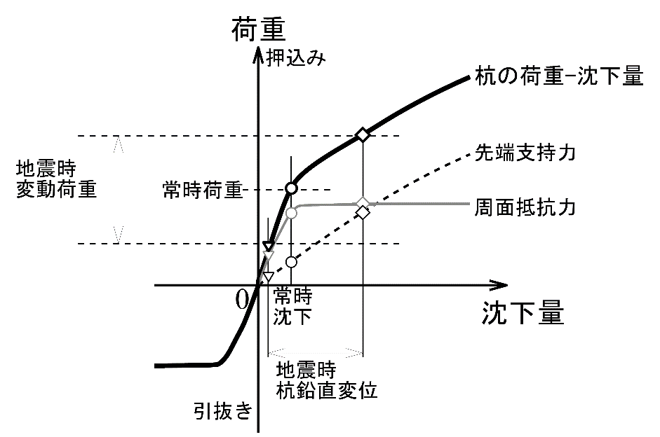
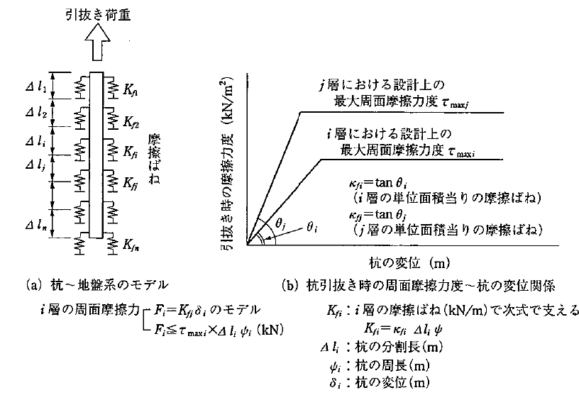
- ここに、
- $\Delta S_E$ある層の載荷面隅角部の即時沈下量
- $S_E$ある層上端の隅角部の弾性沈下量
- $S_E'$ある層下端の隅角部の弾性沈下量
- $q$単位面積あたりの荷重
- $B$基礎の短辺長さ
- $E_S$地盤の変形係数
- $I_S$沈下影響係数
- ここに、
- $L$基礎の長辺長さ
- $B$基礎の短辺長さ
- $l$$L/B$
- $H$地盤の厚さ
- $d$$H/B$
- $q$基礎に作用する荷重度
- $E_s$地盤の変形係数
- $\nu_s$地盤のポアソン比
- ここに、
- $I_S(H_1, \nu_{s1})$層厚$H_k$、ポアソン比$\nu_{sk}$の地盤における沈下係数
- $H_k$地表面から$k$層下端迄の距離
一様地盤中の杭の横抵抗計算
Changの式により杭の横抵抗を解析的に求めることができます。
日本コンクリート工業会「TECHNICAL NOTE」杭の横抵抗に関する一般式を参照しています。
| 項目 | 数式 |
|---|---|
| たわみ曲線 | $$ y = \frac{H}{4 E I \beta} e^{-\beta x}\left((2-\alpha_r)\cos(\beta x) + \alpha_r\sin(\beta x)\right) $$ |
| 杭頭変位 | $$ \delta = \frac{H}{4EI\beta^3} (2-\alpha_r) $$ |
| 杭頭拘束モーメント | $$ M_0=\frac{H}{2\beta}\alpha_r $$ |
| 杭各部の曲げモーメント | $$ M_m=-\frac{H}{2\beta}\sqrt{(1-\alpha_r)^2+1}\,exp(-tan^{-1}(\frac{1}{1-\alpha_r})) $$ |
| 地中部最大曲げモーメント | $$ l_m=-\frac{1}{\beta}tan^{-1}(\frac{1}{1-\alpha_r}) $$ |
| 地中部最大曲げモーメント発生深さ | $$ M=-\frac{H}{2\beta}e^{-\beta x} ((2-\alpha_r)sin\beta x - \alpha_r cos\beta x) $$ |
| 杭各部のせん断力 | $$ S=-He^{-\beta x}(cos\beta x - (1-\alpha_r)sin\beta x) $$ |
| 項目 | 数式 |
|---|---|
| 杭体の曲げ剛性 | $$ EI = [E_s (B^4-(B-2t_s)^4)+E_c((B-2t_s)^4-(B-2t)^4]\pi/64 $$ |
| 地盤の基準水平地盤反力係数 | $$ k_{h0} = \alpha \xi E_0 (\frac{B}{B_0})^{-3/4} $$ |
- ここに、
$$ E_c=if(F_c >= 85, 40,000, else 33,500 (\frac{\gamma_c}{24})^2(\frac{F_c}{60})^{-1/3} $$
F.T. Pile構法
許容回転角の設定方法
$$ \theta_a = min(\theta_{ac}, \theta_{as}) $$
$$ \theta_{ac} = 0.03-0.05\frac{\sigma_{nc}}{\phi_{c} \cdot F_{c}} $$
$$ \theta_{as} = \frac{\delta_a}{D_s} $$
- ここに、
- $\theta_a$許容回転角(rad)
- $\theta_{ac}$パイルキャップのひび割れで決まる許容回転角(rad)
- $\theta_{as}$引抜き抵抗用鋼棒の短期許容応力で決まる許容回転角(rad)
- $\sigma_{nc}$圧縮合力によるｙ軸応力度(N/mm2)
- $A_p$支圧面積（杭頭面積）(m2)
- $\phi_c$支圧係数
- $A_c$支承面積（パイルキャップ面積）(m2)
- $F_c$パイルキャップのコンクリートの設計基準強度(N/mm2)
- $\delta_a$鋼棒の許容伸び（$\delta_a=\epsilon_a \times L_s$）(m)
- $\epsilon_a$鋼棒の許容ひずみ（$\epsilon_a=f_t/E_S$）
- $f_t$鋼棒の短期許容応力度(N/mm2)
- $E_s$鋼棒の弾性係数(N/mm2)
- $L_s$鋼棒の有効長さ(m)
杭頭接合部の回転剛性の設定
杭頭接合部の回転剛性は、杭頭の曲げモーメントMと回転角θの関係（以後、M-θ関係
と略します）を（4.8）式と（4.9）式でモデル化して用います。
図4-4-2にM-θ関係のモデル化の概要を示します。
（$0 \le \theta \le \theta_c$のとき）
$$M=K_0 \cdot \theta$$
（$\theta > \theta_c$のとき）
$$M=\frac{\theta}{ \theta + \theta_f}\cdot M_{max}$$
- ここに、
- $M$杭頭接合部の曲げモーメント(kNm)
- $\theta$杭頭接合部の回転角(rad)
- $\theta_{c}$浮き上がり回転角(rad)
- $\sigma_{f}$基準回転角(rad)
- $K_0$初期回転剛性(kNm/rad)
- $M_{max}$最大抵抗モーメント(kNm)
$$\theta_c=\frac{M_c}{K_0}$$
$$M_c=max(\frac{D_1^2 + D_2^2}{8D_1}\cdot N, 0)$$
$$theta_f=\frac{M_{max}-M_c}{K_0}$$
$$K_0=\frac{\pi \cdot E}{32(1-\nu^2)}(D_1^3-D_2^3)\times 10^3$$
$$K_0=\frac{M_a}{\theta_a}$$
$$M_a=3.75 \times 10^{-4} \times a_g \cdot f_t \cdot D_s + 0.5N \cdot D_s$$
$$\theta_a = \frac{\delta_a}{D_s}$$
$$M_{max}=\eta \cdot M_e$$
$$\eta=-0.16 \frac{\sigma_n}{F_c}+1.0$$
$$M_e=0.5N\cdot D_1$$
$$M_e=5\times 10^{-4} \times a_g \cdot f_u \cdot D_s + 0.5N \cdot D_S$$
キャプテンパイル工法
キャプテンパイル工法
(BCJ評定-FD0230-01)
杭頭接合部の曲げモーメント-回転角関係の評価
杭頭接合部構造性能モデル化
杭頭回転特性は、杭頭曲げモーメント$M_p$と回転角$\theta_p$の関係により評価します。
- ここに、
- $K_1$杭頭接合部の等価初期回転剛性
- $K_2$杭頭接合部の圧縮軸力時における2次回転剛性$K_2=\frac{M_y-M_1}{\theta_y-\theta_1}$
- あるいは、引張軸力時における初期回転剛性$K_2=\frac{M_y}{\theta_y}$
- $M_1$離間時曲げモーメント
- $M_y$降伏時曲げモーメント
- $M_u$終局時曲げモーメント
- $\theta_1$離間時回転角
- $\theta_y$降伏時回転角
- $\theta_y'$終局時回転角
- $\theta_u$限界回転角(=0.04rad)
設定値の算出法
杭頭接合部の等価初期回転剛性
杭頭接合部の圧縮軸力時における等価初期回転剛性$K_1$は下式により算定します。
$$K_1=K_e=\frac{1}{\frac{1}{K_p}+\frac{1}{K_c}+\frac{1}{K_b}}$$
- ここに、
- $K_e$初期回転剛性(kNm/rad)
- $K_p$杭体部分の回転剛性(kNm/rad)
- $E_p$杭体のヤング係数（kN/m2）
- $I_p$杭体の断面二次モーメント、絞り部ありの場合は絞り部径を杭径とみなす(m4)$
- $H_p$杭体とPCリングの重なり長さ(m)
- $K_c$PCリング内コンクリート回転剛性(kNm/rad)$K_c=\frac{E_c \cdot I_c}{H_c}$
- $E_c$杭体のヤング係数(kN/m2)
- $I_c$PCリング内側コンクリートの断面二次モーメント、絞り部有無によらない(m4)
- $H_c$杭頭接合面からPCリング上端までの長さ(m)
- $K_b$パイルキャップ部分の回転剛性(kNm/rad)$K_b=\frac{E_b \cdot I_b}{H_b}$
- $E_b$パイルキャップコンクリートのヤング係数(kN/m2)
- $I_b$仮想円柱のコンクリートの断面二次モーメント、絞り部有無によらない(m4)
- $H_b$仮想円柱の高さ($=D/2$)(m)
離間時モーメント
引張応力が発生しない離間時曲げモーメントM_1は下式により算定します。
$$M_1=\sigma_0 \cdot Z$$
- ここに、
- $\sigma_0$杭頭部接合部の軸方向応力度(kN/m2)$\sigma_0=\frac{N}{A_e}$
- $A_e$杭頭接合部の断面積(m2)$A_e=\frac{\pi}{4}D^2$
- $Z$杭頭接合部の断面係数(m3)$Z=\frac{\pi}{32}D^3$
- $D$杭径(m)。ただし絞り部ありの場合は絞り部径を杭径とみなす。
降伏曲げモーメントおよび終局曲げモーメント
降伏曲げモーメント$M_y$および終局曲げモーメント$M_u$については、以下の仮定に基づいて算定します。
- ① 断面力の釣合いとひずみ度の適合条件を考慮した塑性曲げ理論に基づいて算定する。
- ② 解析における断面形状は、杭径を直径とする円形断面とする。ただし、絞り部がある場合は絞り部径を直径とする。
- ③ 引張定着筋降伏時の曲げモーメントは、最外縁の引張定着筋が降伏するときの値とする。
- ④ 圧縮降伏時の曲げモーメントは、圧縮縁コンクリートが$0.85\sigma_{max}$に達したときの値とする。
- ⑤ 降伏時の曲げモーメント$M_y$は、引張定着筋降伏時と圧縮降伏時の曲げモーメントのうち小さい方の値とする。ただし、引張定着筋を配置しない場合の降伏時曲げモーメントは、上記④に達したときの値とする。
- ⑥ 終局時の曲げモーメント$M_u$は、最大曲げモーメントとする。
- ⑦ コンクリートの応力度$\sigma$とひずみ度$\epsilon$の関係は下式とする。
- $\epsilon \le 0: \sigma = 0$
- $0 \lt \epsilon \le \epsilon_B: \sigma = 6.75(e^{-0.812 \frac{\epsilon}{\epsilon_0}} - e^{-1.218 \frac{\epsilon}{\epsilon_0}}), \sigma_{max}$
- $\epsilon_B \lt \epsilon: \sigma = \sigma_{max}$
- ここに、
- $\epsilon_B$コンクリート最大強度時のひずみ度で$\epsilon_B=0.003$とする。
- $\sigma_{max}$コンクリートの最大強度で$\sigma_{max}=\frac{F_c}{\nu^2}$とする。
- $F_c$コンクリートの設計基準強度で杭体、パイルキャップの設計基準強度のうち、最小の値とする。
- $\nu$絞り係数。
- ⑧ 引張定着筋の応力度$\sigma$とひずみ度$\epsilon$の関係は下式とする。
- $\epsilon \le -\epsilon_y: \sigma = -\sigma_y$
- $-\epsilon_y \lt \epsilon \le \epsilon_y: \sigma = E_s \epsilon$
- $\epsilon_y \lt \epsilon: \sigma = \sigma_y$
- ここに、
- $\epsilon_y$引張定着筋降伏時ひずみ度（$\epsilon_y= \sigma_y/E_s$ ）
降伏時回転角
断面解析における曲率から降伏時回転角$\theta_u$への換算は、杭体のヒンジ領域を杭径部とし、ヒンジ領域では一定の曲率であると仮定した下式で評価します。
$$ \theta_y = \int_{0}^{D} \phi_y \, dx = \phi_y D $$
- ここに、
- $\phi_y$前項c.で算定される$M_y$時曲率
- $D$杭径 ただし、杭頭接合部に絞り部がある場合には杭径を絞り部径とみなす。
杭頭接合部の曲げ耐力の算定法
短期許容曲げモーメント$M_a$は、降伏時曲げモーメント$M_y$算定に用いたモーメント-曲率関係において、以下の条件に達した時点の曲げモーメント①、②のうち、小さいほうの値とします。
ただし、引張鉄筋を配置しない場合は、以下の②の条件に達したときの値とします。
①最外縁の引張定着筋が降伏するとき
②圧縮縁コンクリートが短期許容圧縮応力度($\frac {2}{3} \cdot \frac{F_c}{\nu^2}$($\nu$: 絞り係数))に達するとき
有限要素法による解析手法
本プログラムでは、杭基礎の水平抵抗解析に有限要素法（FEM）を用いています。
以下に、本プログラムで採用している解析手法の概要を示します。
解析モデルの概要
杭体を梁要素、地盤をばね要素（水平地盤ばね）でモデル化し、 増分荷重法とニュートン・ラフソン法による非線形解析を行います。
- 杭体：12自由度（1節点あたり6自由度×2節点）の梁要素
- 地盤：杭−地盤間の水平地盤ばね（非線形）
- 杭頭：回転ばね要素（半剛接合の場合）
- 剛床連結：ペナルティばね（剛床仮定の場合）
全体剛性マトリクスの組立
各要素の要素剛性マトリクス$\mathbf{K}_e$を座標変換し、全体剛性マトリクス$\mathbf{K}$に重ね合わせます。
- ここに、
- $\mathbf{K}_{local}$要素座標系における要素剛性マトリクス（12×12）
- $\mathbf{T}$座標変換マトリクス（方向余弦行列を含む12×12回転マトリクス）
- $\mathbf{K}_{global}$全体座標系における要素剛性マトリクス
全体剛性マトリクスは自由度の拘束状態により以下のように分割されます。
- ここに、
- 添字 $A$自由な自由度（未知変位）
- 添字 $B$拘束された自由度（既知変位＝0）
実際の解析では$\mathbf{K}_{AA} \mathbf{d}_A = \mathbf{F}_A$を解きます。 疎行列を利用し、CSparse（SparseQR分解）を一次ソルバーとして使用します。
強制変位の処理（直接消去法／1-0法）
地盤変位による杭への強制変位は、直接消去法（1-0法、行・列消去法とも呼ばれる）で処理します。 この手法は、変位既知の自由度に対応する剛性マトリクスの行・列を消去し、対角成分を1に設定する方法です。
手順は以下のとおりです。
-
荷重ベクトルの修正：強制変位自由度$eq$の影響を他のすべての自由度から差し引く
$$R_i \leftarrow R_i - K_{i,eq} \cdot \delta_{prescribed} \quad (i \neq eq)$$(荷重ベクトル修正)
-
右辺の設定：強制変位自由度の右辺を既知変位値に設定
$$R_{eq} = \delta_{prescribed}$$(右辺代入)
-
剛性マトリクスの消去：該当する行・列の非対角成分を0、対角成分を1に設定
$$K_{eq,eq} = 1, \quad K_{i,eq} = 0, \quad K_{eq,i} = 0 \quad (i \neq eq)$$(行・列消去)
これにより、連立方程式を解くと強制変位自由度の解は$\delta_{prescribed}$となり、 他の自由度は強制変位の影響を受けた値として求まります。
地盤ばねの土側節点に対してこの処理を適用し、 地震時の地盤変位分布（基礎指針'19 4.5節による）を各荷重ステップで漸増的に与えます。
ペナルティ法による剛体連結
杭頭と基礎構造の連結（剛床連結モード）にはペナルティ法を用います。 十分に大きなばね定数$K_{big}$（= $10^8$）をもつばね要素で2節点間を連結し、 拘束条件を近似的に実現します。
ペナルティ法は直接消去法と異なり、マトリクスの構造を変更せずに大きなばね定数を剛性マトリクスに加算するだけで 拘束を実現できるため、実装が簡単です。ただし、$K_{big}$の値が大きすぎると行列の条件数が悪化し、 数値的な不安定性を生じる場合があります。
非線形解析手法（ニュートン・ラフソン法）
杭体の材料非線形性（M-φ関係）および地盤ばねの非線形性を考慮するため、 増分荷重法とニュートン・ラフソン法（Newton-Raphson法）を併用します。
増分荷重法
外力を複数のステップに分割して漸増的に載荷します。各ステップの荷重増分は：
- ここに、
- $n_{step}$荷重ステップ数（レベル1：既定2、レベル2：既定8）
Newton-Raphson反復法
各荷重ステップにおいて、以下の反復計算を収束するまで繰り返します。
-
接線剛性マトリクスの組立（Full NR）または再利用（Modified NR）
$$\mathbf{K}_{tan} = \frac{\partial \mathbf{T}}{\partial \mathbf{d}}$$(接線剛性)
-
変位増分の求解
$$\mathbf{K}_{tan} \Delta \mathbf{d} = \mathbf{R}$$(線形連立方程式)
-
変位の更新（緩和係数$\omega$を適用）
$$\mathbf{d} \leftarrow \mathbf{d} + \omega \cdot \Delta \mathbf{d}$$(変位更新)
-
内力ベクトルの計算
$$\mathbf{T} = \sum_e \mathbf{T}^T_e \mathbf{K}_{e,sec} \mathbf{d}_e$$(内力ベクトル)
-
残差ベクトルの計算
$$\mathbf{R} = \mathbf{F} - \mathbf{T}$$(残差ベクトル)
-
収束判定
$$\frac{\|\mathbf{R}\|^2}{\|\mathbf{F}\|^2} < \alpha_{tol}$$(収束条件)
- ここに、
- $\mathbf{T}$内力ベクトル（各要素の内力を全体座標系に集成したもの）
- $\mathbf{R}$残差ベクトル（外力と内力の不釣り合い力）
- $\omega$緩和係数（0.1〜1.0、適応的に調整）
- $\alpha_{tol}$収束判定値
Full NR法とModified NR法
本プログラムでは、Full Newton-Raphson法とModified Newton-Raphson法を切り替えて使用します。
| 手法 | 接線剛性の更新 | 特徴 |
|---|---|---|
| Full NR | 毎反復で更新 | 収束が速い、計算コスト高 |
| Modified NR | 初期数回のみ更新、以降再利用 | 反復あたりのコスト低、収束はやや遅い |
適応的緩和係数
収束性を改善するため、反復過程の残差の変化に応じて緩和係数$\omega$を自動調整します。
- 残差が20%以上減少 → $\omega$を増加（最大1.0まで）
- 残差が2%以上増加（発散傾向） → $\omega$を減少（最小0.1まで）
- 停滞（変化が0.1%未満） → $\omega$をやや減少
ライン探索（Line Search）
発散が検出された場合、自動的にライン探索法に切り替わります。 ライン探索では、Newton方向$\Delta \mathbf{d}_{NR}$に沿って最適なステップ長$\alpha^*$を求めます。
ステップ長の決定には、3点（$\alpha = 0, 0.5, 1.0$）での残差値から二次関数をフィッティングし、 その極小値を用います。
- ここに、
- $a = 2f_1 - 4f_{0.5} + 2f_0$
- $b = -3f_0 + 4f_{0.5} - f_1$
- $f_0, f_{0.5}, f_1$それぞれ$\alpha = 0, 0.5, 1.0$における残差$\|\mathbf{R}\|^2/\|\mathbf{F}\|^2$
$\alpha^*$は$[0.05, 0.95]$の範囲にクランプされます。 二次近似で改善が得られない場合は、$\alpha = 0.25, 0.125, 0.0625$の順で幾何的に縮小したステップ長を試行します。
杭体の非線形性（M-φ関係）
杭体の材料非線形性は、モーメント−曲率関係（M-φ関係）により考慮します。 M-φ曲線は杭断面の種類（RC杭・鋼管杭・既製杭）に応じて定義され、 曲率に応じた有効曲げ剛性$EI_{eff}$を求めます。
接線剛性と割線剛性
要素の平均曲率は、要素両端の回転角から算出します。
- ここに、
- $\theta_i, \theta_j$要素両端の回転角 [rad]
- $L$要素長 [m]
- $\varphi$曲率 [rad/m]
剛性低減率
弾性時の曲げ剛性$EI_0$に対する低減率$k$を求め、要素剛性マトリクスに反映します。
低減率の更新には緩和を適用し、急激な剛性変化による数値的不安定性を防止します。
- ここに、
- $\lambda_{tan} = 0.3$接線剛性の緩和率
- $\lambda_{sec} = 0.5$割線剛性の緩和率
M-φ曲線の接線勾配の平滑化
M-φ曲線の折れ点（制御点の境界）において、接線勾配が不連続になると ニュートン・ラフソン法の収束性が低下します。 本プログラムでは、各折れ線区間の境界付近（区間長の20%の範囲）で Smoothstep関数による滑らかな補間を行います。
発散検出と自動制御
解析の安定性を確保するため、以下の自動制御機能を備えています。
| 検出項目 | 条件 | 対応 |
|---|---|---|
| 急激な発散 | 残差 > 100 × 初期残差 | ライン探索に自動切替 |
| 緩やかな発散 | 10回連続で残差が増加 | 収束基準の緩和 |
| 停滞 | 残差変化が0.1%未満で継続 | 収束基準の緩和 |
| 変位増分過大 | $|\Delta d|_{max}$ > 50mm | 変位増分をスケーリング |
| 最大反復回数超過 | 反復回数が上限に到達 | 警告表示、対策を提示 |
解析フロー
以下に、水平解析の全体的な計算フローを示します。
| 初期化：$\mathbf{d} = \mathbf{0}$, $\mathbf{T} = \mathbf{0}$, $\mathbf{R} = \mathbf{F}$ | |
| ↓ | |
| 荷重ステップループ：$step = 1, 2, \ldots, n_{step}$ | |
| ↓ | |
| Newton-Raphson反復ループ：$n = 1, 2, \ldots, N_{max}$ | |
| ① | M-φ関係から接線剛性$EI_{tan}$を更新（Full NR） |
| ② | 全体接線剛性マトリクス$\mathbf{K}_{tan}$を組立 |
| ③ | 強制変位の処理（直接消去法） |
| ④ | 連立方程式$\mathbf{K}_{tan}\Delta\mathbf{d} = \mathbf{R}$を解く（CSparse / MathNet） |
| ⑤ | 変位更新：$\mathbf{d} \leftarrow \mathbf{d} + \omega \cdot \Delta\mathbf{d}$（またはライン探索） |
| ⑥ | 割線剛性$EI_{sec}$を更新し、内力ベクトル$\mathbf{T}$を計算 |
| ⑦ | 残差$\mathbf{R} = \mathbf{F} - \mathbf{T}$を計算し、収束判定 |
| ↓ 収束：次の荷重ステップへ ／ 未収束：反復を継続 | |
解析結果の見方
メインビューでの解析結果表示
水平解析完了後、リボンメニュー「解析結果(R)」タブの各コントロールで、 メインビュー上に解析結果を表示できます。
解析結果の種類
左上のドロップダウンと右ペインの「杭・梁要素 解析結果」ドロップダウンで表示内容を切り替えます。
- 梁応力: 杭・梁要素のせん断力・曲げモーメント等のダイアグラム表示
- 節点変位: 杭・地盤節点の変位ダイアグラム表示
- 地盤反力: 水平地盤ばねの反力を矢印で表示（カラーバー付き）
- 杭頭Mマップ: 各杭の杭頭曲げモーメントを矢印で表示（カラーバー付き）
- 杭頭Qマップ: 各杭の杭頭せん断力を矢印で表示（カラーバー付き）
- 接合点Mマップ: 基礎梁接合点の曲げモーメントを矢印で表示
- 接合点Qマップ: 基礎梁接合点のせん断力を矢印で表示
杭頭Mマップ・杭頭Qマップを選択すると、応力ダイアグラムスケールが自動的に0.1に設定され、 値表示が自動的にONになります。
ダイアグラムスケール
リボンメニュー「解析結果(R)」タブの「ダイアグラムスケール」グループで、 応力・変位のダイアグラム表示サイズを調整できます。
- スライダー: ドラッグして0.00～1.00の範囲で調整
- テキストボックス: スライダー右側のテキストボックスに数値を直接入力して指定可能（入力後フォーカスを外すと反映）
「応力」は梁応力・地盤反力・杭頭マップ等の力に関するダイアグラムに適用されます。 「変位」は節点変位のダイアグラムに適用され、節点変位表示時のみ表示されます。
荷重ケース・荷重組み合わせ・液状化の選択
右ペインのドロップダウンで荷重ケース（VL+E1, U1 等）と荷重組み合わせを選択します。 液状化考慮の有無はトグルボタンで切り替えます。 荷重ケースを切り替えると、解析結果に応じて液状化の状態が自動検出されます。
結果グラフの読み方
解析完了後、各種グラフウィンドウで結果を確認できます。
グラフ上でマウスカーソルを移動すると、近傍の点の座標値が表示されます。
水平解析結果グラフ
「解析結果(R)」→「グラフ出力」で開くグラフウィンドウでは、右上の「グラフの種類」ドロップダウンから 各種グラフを選択できます。以下に主なグラフ種類を示します。
杭変位応力
3パネル表示で、杭の深さ方向の変位・せん断力・曲げモーメントを一覧表示します。
| 位置 | グラフ | 内容 | 確認ポイント |
|---|---|---|---|
| 左 | 変位・地盤変位 | 杭体の水平変位（実線）と地盤変位（破線） | 杭頭変位が許容値以内か確認 |
| 中 | せん断力 | 杭体の深さ方向のせん断力分布 | 許容せん断力との比較 |
| 右 | 曲げモーメント | 杭体の深さ方向の曲げモーメント分布 | 使用限界/損傷限界/安全限界との比較 |
「限界状態」ドロップダウンで使用限界・損傷限界・安全限界を選択すると、 各要素の軸力に応じた限界値が破線で重ね描きされます。
杭周地盤変位反力
3パネル表示で、杭周地盤の相対変位・水平地盤反力・ばね割線剛性を深さ方向に表示します。
杭体M-φ・EI-φ
杭体のM-φ（曲げモーメント-曲率）関係を表示します。EI-φモードでは各M-φ区間を 細分化して正確なEI曲線を描画します。解析最終ステップの曲率位置がマーカーで表示されます。
その他のグラフ
- 杭頭応力変形関係: 荷重増分ステップごとの杭頭変位と水平力の関係
- 杭応力F/M: 単パネルで個別の応力成分（Fy/Fz/F/My/Mz/M）を表示
- 杭変位UX/UY/U: 単パネルで個別の変位成分を表示
- NMINT/QNINT: 軸力-曲げモーメント/軸力-せん断力インタラクション図
- 水平地盤反力度p-y: 各要素の理論p-y曲線と最終ステップマーカー
- 単杭沈下/群杭沈下: 通り心方向の沈下分布
各グラフで右クリック→「CSVとして保存...」でデータをエクスポートできます。
沈下解析結果
「解析」→「即時沈下」で開くウィンドウでは、群杭としての沈下量を確認できます。
| 項目 | 内容 | 判定基準例 |
|---|---|---|
| 杭頭沈下量 | 荷重-沈下関係から求まる杭頭沈下量 | 一般建物: 25mm以下（基礎指針'19） |
| 群杭沈下量 | Steinbrennerの近似解による群杭沈下 | 絶対沈下量と不同沈下量を確認 |
| 不同沈下傾斜角 | 通り心間の不同沈下傾斜角 | 1/1000以下（建築学会基準） |
判定結果の色分け
結果テーブルでは、以下の色分けにより判定結果を視覚的に確認できます。
| 色 | 判定 | 内容 |
|---|---|---|
| 緑 | OK | 設計条件を満足している |
| 黄 | 注意 | 余裕率が小さい（要確認） |
| 赤 | NG | 設計条件を満足していない |
限界状態設計の考え方
本プログラムでは、基礎指針'19に準拠した限界状態設計法による検討を行います。
使用限界状態 (SLS: Serviceability Limit State)
通常使用時に要求される機能を満足するための限界状態です。 鉛直荷重に対しては$\phi_R = 1/3$、水平荷重に対しては弾性範囲内であることを確認します。
損傷限界状態 (DLS: Damage Limit State)
レベル1地震動に対して、補修なしで使用継続可能な限界状態です。 鉛直荷重に対しては$\phi_R = 1/1.5$を適用します。
安全限界状態 (ULS: Ultimate Limit State)
レベル2地震動に対して、人命の安全確保および建物の崩壊防止が可能な限界状態です。 鉛直荷重に対しては$\phi_R = 1/1$（極限支持力）を適用します。
総合評価ウィンドウ
水平解析完了後、リボンメニュー「結果」タブ →「総合評価」ボタンで総合評価ウィンドウを開くことができます。 このウィンドウでは、水平解析結果が各限界状態の判定基準を満たしているかを一括でチェックできます。
操作方法
ウィンドウ上部のツールバーに以下のボタン・オプションがあります。
| 項目 | 説明 |
|---|---|
| 低減前水平解析 | 低減前（Unfactored）のN-M相関曲線を用いて判定を実行します |
| 低減後水平解析 | 低減後（Factored）のN-M相関曲線を用いて判定を実行します |
| NGのみ / OKのみ / OK/NG | ラジオボタンで表示するチェック結果をフィルタリングできます |
| Export to File | 評価結果をテキストファイルとして保存します |
判定基準
以下の項目について、全荷重ケース・全荷重組み合わせケースに対してNG判定を行います。
レベル1地震動
- M-φ関係（損傷限界）: 各杭要素のi端またはj端の曲げモーメントが、損傷限界状態のN-M相関曲線による許容モーメントを超える場合にNG
- 杭頭回転角θ: 場所打ち鉄筋コンクリート杭において、杭頭の回転角$\theta$が$1/100$ radを超える場合にNG
レベル2地震動
耐震グレードにより判定基準が異なります。
| 耐震グレード | M-φ関係の判定基準 | θの判定基準 |
|---|---|---|
| A | i端またはj端が終局限界状態を超える場合にNG | 場所打ちRC杭で$\theta > 1/100$ radの場合にNG |
| S | i端またはj端が損傷限界状態を超える場合にNG | 場所打ちRC杭で$\theta > 1/100$ radの場合にNG |
軸力の取り扱い
N-M相関曲線による許容モーメントの算定に用いる軸力は、ユーザーが入力した荷重ケースごとの軸力値を使用します。 具体的には、レベル1荷重ケースに対してはレベル1地震時軸力、レベル2荷重ケースに対してはレベル2地震時軸力が適用されます。
低減前と低減後の違い
N-M相関曲線には低減前（Unfactored）と低減後（Factored）の2種類があります。 低減後の曲線は、軸力レベルに応じた低減係数βを乗じたもので、安全側の評価となります。
出力例
各NG項目には以下の情報が記載されます。
- 限界状態の種類（損傷限界 / 終局限界）
- 超過した端部（i端 / j端）
- 要素名、杭配置番号、杭内要素番号
- 荷重ケース名、荷重組み合わせケース名、液状化状態
- 作用モーメント、許容モーメント、軸力の値
便利な機能
プロパティパネル
画面左側のドッキングパネルに「プロパティ」パネルが表示されます。 メインビューで杭節点・一般節点・梁要素を選択すると、選択したアイテムのプロパティが一覧表示されます。
杭を選択した場合
座標、杭体No、地盤No、杭長、群杭係数、間隔係数、ΔZc、軸力が表示されます。
- 杭長: 杭体セグメントの合計長さ
- 軸力 VL: 常時合計軸力
- 軸力 1-1 ～ 1-N: レベル1地震時の各ケース軸力
- 軸力 2-1 ～ 2-N: レベル2地震時の各ケース軸力
複数の杭を選択した場合、杭長（合計）および軸力（合計）が表示されます。
梁要素を選択した場合
要素No、節点No、材料No、断面No、幅、高さ、ヤング率、横弾性係数、角度β、部材長が表示されます。
- ヤング率・横弾性係数: N/mm²単位（桁区切りカンマ付き）で表示
- 部材長: I端・J端の節点座標から算出した3D距離
複数の梁要素を選択した場合、部材長（合計）が表示されます。共通するプロパティ値は表示され、異なる値は「(様々)」と表示されます。
選択中のアイテムのプロパティ値を左ペインのデータグリッドで変更すると、プロパティパネルの表示もリアルタイムに更新されます。
プロパティパネルの項目が多い場合は、スクロールバーが自動表示されます。 パネルは閉じる・ドッキング解除・自動非表示が可能です。閉じた場合は「ウィンドウ」メニューから再表示できます。
ミニマップ
プロパティパネルの下部に「ミニマップ」パネルが表示されます。 モデル全体の鳥瞰図が描画され、杭節点・一般節点・梁要素の位置関係を俯瞰的に確認できます。
- 選択中の節点は赤色で強調表示されます
- 現在のビュー範囲が灰色の矩形で表示されます
- ビューの回転・ズーム操作に連動してリアルタイムに更新されます
ミニマップはドッキング解除・閉じる・自動非表示が可能です。閉じた場合は「ウィンドウ」メニューから再表示できます。
ホバーハイライト
メインビュー上でマウスカーソルを杭節点・一般節点・梁要素に近づけると、 対象がハイライト表示（色変化）されます。 これにより、クリック前に選択対象を視覚的に確認できます。
トースト通知
ファイル保存、解析完了、エラー発生など、主要な操作の結果がトースト通知（画面右下のポップアップ）で表示されます。 通知は数秒後に自動的に消えます。
データのエクスポート機能
CSVエクスポート
グラフウィンドウ上で右クリックし、「CSVとして保存...」を選択すると、 グラフに表示されているデータをCSV形式でエクスポートできます。
エクスポートしたCSVファイルは、Excelなどの表計算ソフトで開き、 独自のグラフ作成や詳細な分析に活用できます。
画像保存
メインビューおよびグラフウィンドウで右クリック→「画像保存」を選択すると、 現在の表示内容を画像ファイル（PNG形式）として保存できます。 報告書への添付に便利です。
3Dビュー操作
ビューキューブ
画面右下のビューキューブを使用すると、素早くビューを切り替えられます。
- 面クリック: 正面、上面、右側面など定義済みビューに切替
- 辺クリック: 対角方向からのビューに切替
- 頂点クリック: アイソメトリックビューに切替
沈下コンター表示
群杭沈下解析後、メインビューの「グリッド変位表示」チェックボックスをONにすると、 沈下量のコンター図が表示されます。 マウスカーソル位置の沈下量がツールチップで表示されます。
ラベル表示
リボンメニュー「表示(V)」タブの「一般ラベル」グループおよび「杭節点ラベル」グループのトグルボタンで、 メインビュー上の各種ラベルの表示/非表示を切り替えることができます。
一般ラベル
- 梁要素番号: 梁要素の中心に要素番号を表示
- 材料No: 梁要素の材料番号を表示
- 材料名称: 梁要素の材料名称を表示
- 断面No: 梁要素の断面番号を表示
- 断面名称: 梁要素の断面名称を表示
- β: 梁要素のβ角度（要素座標系回転角）を表示
- 一般Z: 一般節点のZ座標を表示
杭節点ラベル
- 節点番号: 杭配置番号を表示
- 杭頭レベル: 杭頭のZ座標を表示
- 杭参照: 杭体の参照名を表示
複数のラベルを同時にONにすることで、材料・断面の割り当てを一目で確認できます。
Excelとの連携
データグリッドでは、Excelとの相互コピー＆ペーストが可能です。
- 貼り付け: Excelで範囲選択→コピー→データグリッドでセル選択→Ctrl+V
- コピー: データグリッドで範囲選択→Ctrl+C→Excelでペースト
レポート出力
「ファイル」→「レポート出力」で、解析結果をWord形式の計算書として出力できます。 出力される内容は以下の通りです。
- 入力条件（地盤条件、杭諸元、荷重条件）
- 支持力計算結果
- 沈下量計算結果
- 水平解析結果（変位、応力分布図）
- 判定結果一覧表
ウィンドウ(W) メニュー
リボンメニューの「ウィンドウ(W)」タブから、閉じたパネルを再表示できます。
- プロパティ: プロパティパネルを再表示します
- ミニマップ: ミニマップパネルを再表示します
解析結果の保護
水平解析・単杭沈下解析・群杭沈下解析・基礎梁考慮鉛直解析の実行後にモデルを変更する操作（杭の追加・削除、梁要素の生成・分割、節点の追加・変換、群杭係数の再計算など）を行うと、 「解析結果が削除されます。続けますか？」という確認ダイアログが表示されます。
- 「はい」を選択すると、解析結果がリセットされ操作が実行されます
- 「いいえ」を選択すると、操作がキャンセルされ解析結果が保持されます
これにより、意図しない解析結果の消失を防ぐことができます。
よくある質問 (FAQ)
入力に関する質問
Q: 複数種類の杭を混在させることはできますか？
A: はい、可能です。「杭体」タブで複数の杭体を定義し、 「杭」→「配置」タブで各杭に適用する杭体番号を指定してください。
Q: 地盤条件が杭ごとに異なる場合はどうすればよいですか？
A: 「地盤」タブで複数の地盤モデルを定義し、 各杭に適用する地盤番号を指定してください。建物範囲内で地盤条件が変化する場合に対応できます。
Q: 既製コンクリート杭（PHC杭など）の断面性能はどのように入力しますか？
A: 「杭体」→「既製コンクリート杭」を選択すると、 標準的な杭断面のデータベースから選択できます。 カスタム断面は、現状対応しておりません。
解析に関する質問
Q: 非線形解析が収束しない場合はどうすればよいですか？
A: 以下を確認してください。
- 荷重が極端に大きくないか（杭の支持力を大幅に超過していないか）
- 地盤条件（特にE₀値）が適切か
- 杭頭拘束条件が適切に設定されているか
Q: 液状化地盤の検討はどのように行いますか？
A: 「地盤」ウィンドウでFL法による液状化判定を行い、 低減係数（α、β）を計算します。これらの値は自動的に解析に反映されます。 応答変位法による地盤変位も考慮できます。
Q: 群杭効果はどのように考慮されますか？
A: 水平解析では、基礎指針'19に基づき群杭係数ξを考慮します。 杭間隔比(R/B)と杭本数から自動計算値を確認できますが、適用するには手動での設定が必要です。
出力に関する質問
Q: グラフのデータを取得するにはどうすればよいですか？
A: グラフ上で右クリック→「CSVとして保存...」を選択してください。 グラフに表示されている全てのデータ系列がCSV形式でエクスポートされます。
Q: 計算書（レポート）のフォーマットをカスタマイズできますか？
A: 現時点では、レポートフォーマットのカスタマイズ機能は限定的です。 出力されたWord文書を編集して調整してください。